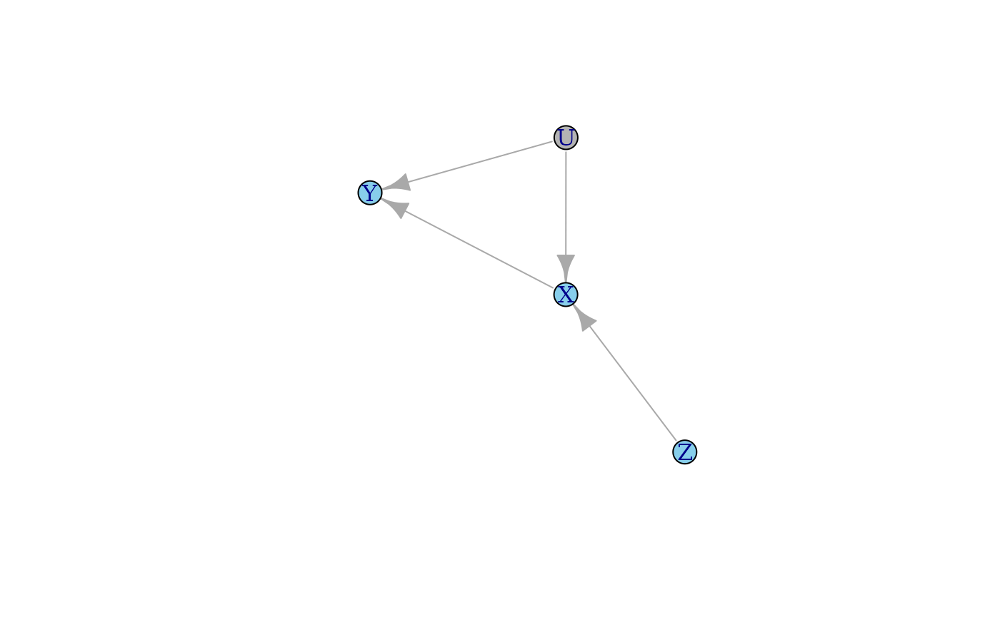
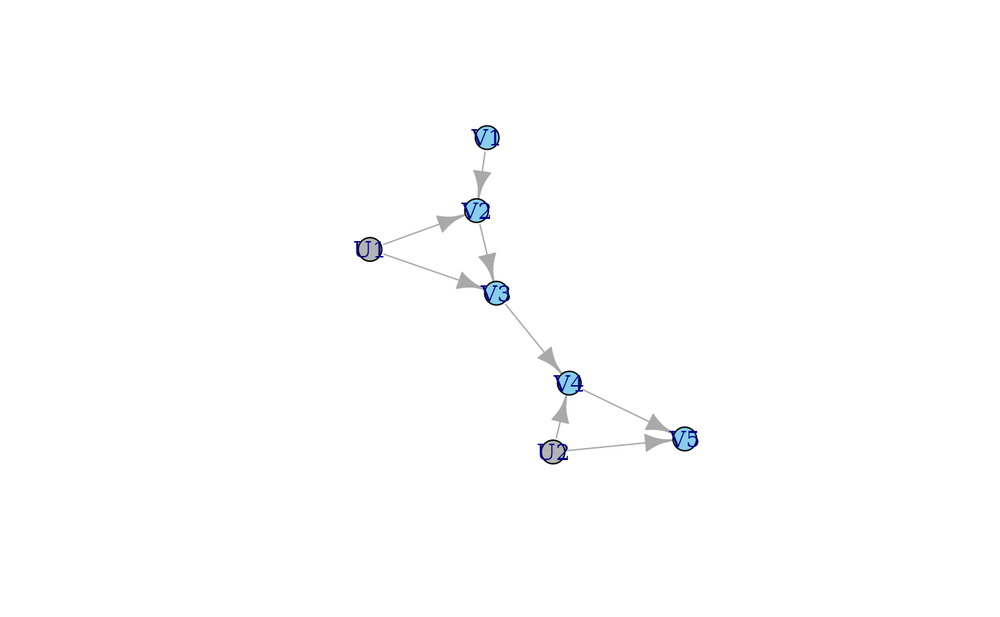
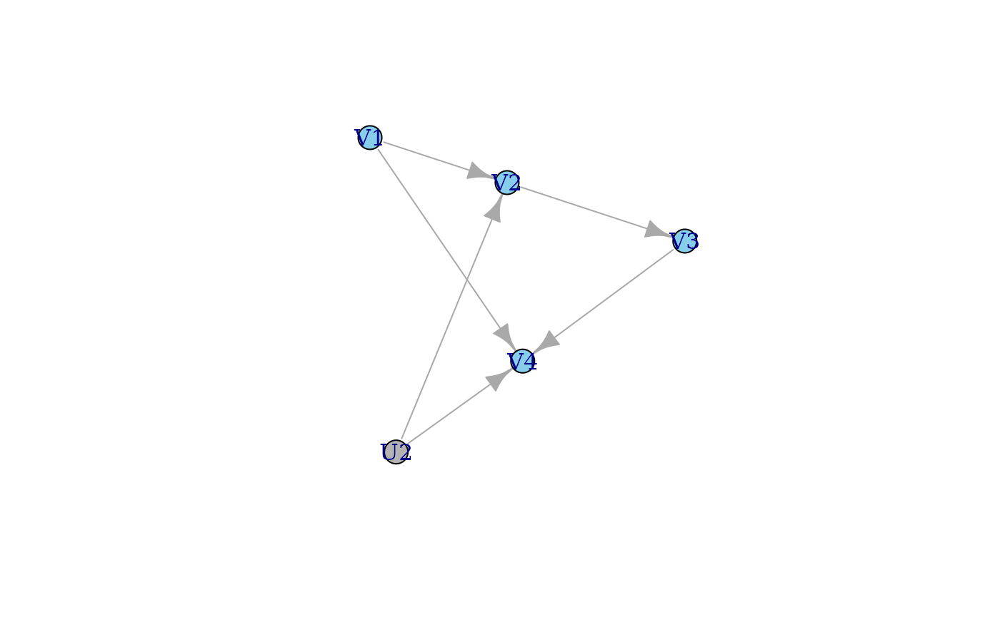
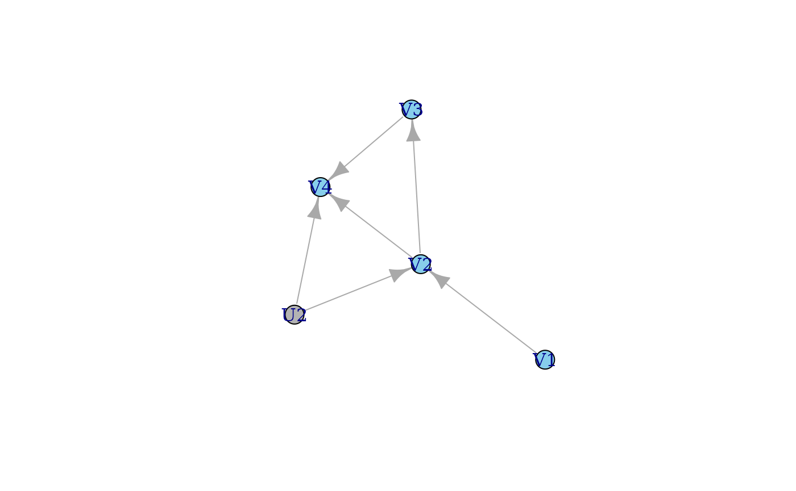
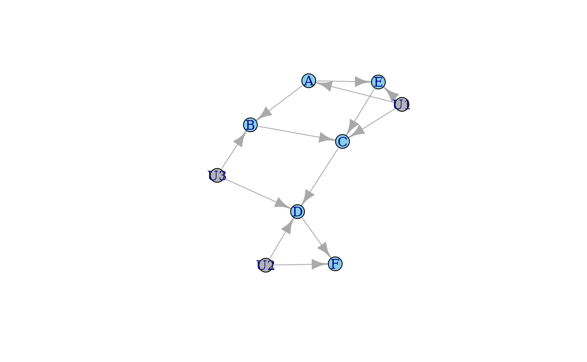
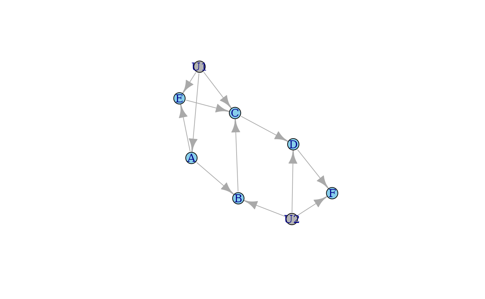
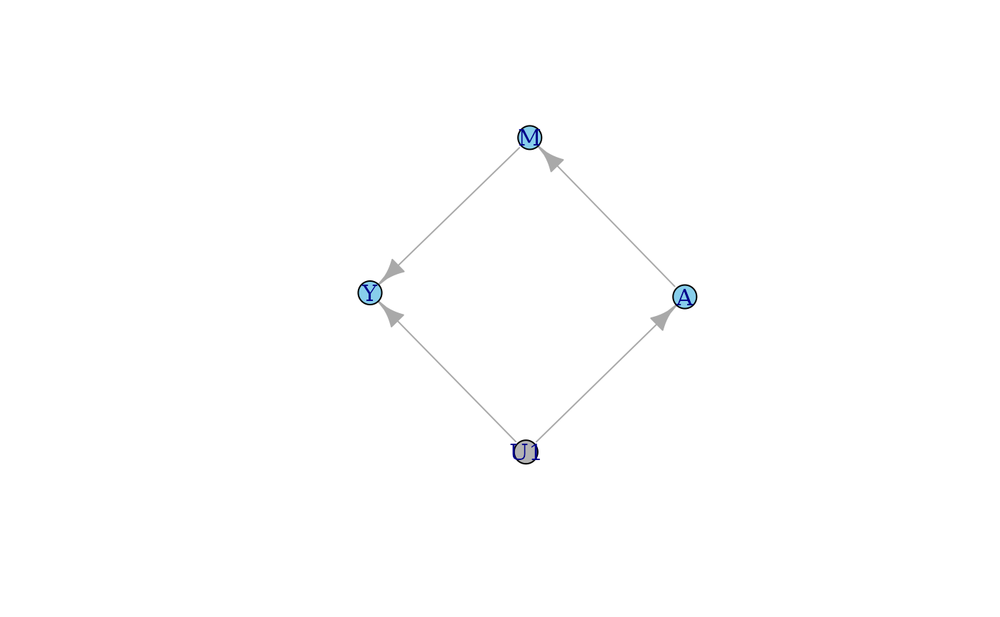
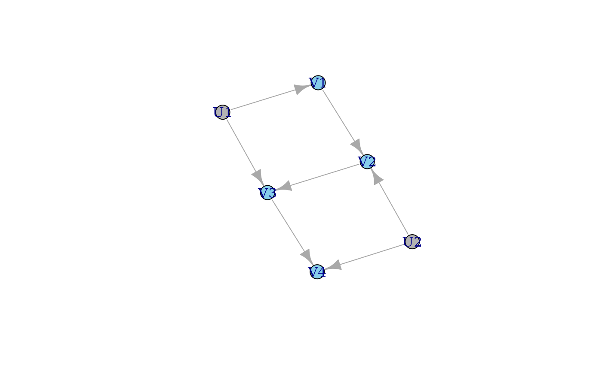
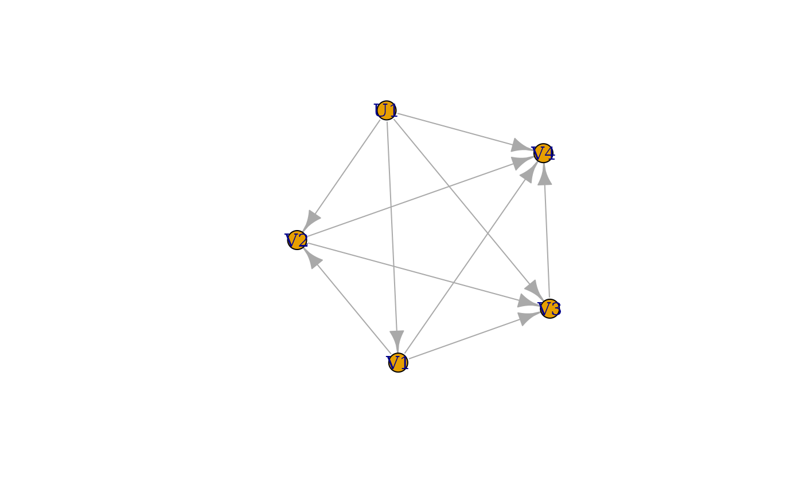

Illustrative examples
examples.Rmd
library(meraconstraints)
library(igraph)
#>
#> Attaching package: 'igraph'
#> The following objects are masked from 'package:stats':
#>
#> decompose, spectrum
#> The following object is masked from 'package:base':
#>
#> union
library(data.table)IV inequalities
These are the steps to get the complete constraints, illustrated in the IV example:
- Define the DAG using
igraph. Our functioninitialize_graphdoes some basic setup, and by default assumes that any variable starting with a capital U is latent. The DAG is plotted, with latent variables indicated in grey.
ivdag <- graph_from_literal(Z -+ X, X -+ Y, U -+ X:Y) |> initialize_graph()
plot(ivdag, vertex.color = ifelse(V(ivdag)$latent, "grey70", "skyblue"))
- List the conditional independence relations. In this case there are none.
dag_list_independences(ivdag)
#> list()- Get the linear relations describing the functional constraints. One such constraint is printed out below.
ivrels <- dag_get_linear_relations(ivdag)
paste(ivrels$probform[[1]][1], "=", paste(ivrels$relation[[1]][[1]], collapse = " + "))
#> [1] "P(X = 0|Z = 0)P(Y = 0|X = 0,Z = 0) = P(R_X = 0, R_Y = 0) + P(R_X = 2, R_Y = 0) + P(R_X = 0, R_Y = 2) + P(R_X = 2, R_Y = 2)"- Convert the functional constraint matrix into the H-representation.
hrepiv <- cf_relations_to_hrep(ivrels)
hrepiv$Hrep[[1]]
#> [,1] [,2] [,3] [,4] [,5] [,6] [,7] [,8] [,9] [,10]
#> [1,] 0 0 0 0 0 0 1 0 0 0
#> [2,] 0 0 1 1 1 0 0 -1 0 0
#> [3,] 0 0 0 -1 0 0 1 1 1 0
#> [4,] 0 0 1 0 0 0 0 0 0 0
#> [5,] 0 1 0 0 -1 0 -1 0 0 0
#> [6,] 0 1 -1 0 0 0 0 0 -1 0
#> [7,] 0 0 0 0 0 0 0 1 0 0
#> [8,] 0 1 0 0 0 0 -1 -1 -1 0
#> [9,] 0 0 0 1 0 0 0 0 0 0
#> [10,] 0 1 -1 -1 -1 0 0 0 0 0
#> [11,] 0 0 0 0 1 0 0 0 0 0
#> [12,] 0 0 0 0 0 0 0 0 1 0
#> [13,] 1 -1 1 1 1 1 0 0 0 0
#> [14,] 1 -1 0 0 0 0 1 1 1 1
#> attr(,"representation")
#> [1] "H"Extra features/optional steps:
- Convert the H-rep matrix into the text-based constraints. This includes trivial ones. You can print them using either the observable probabilities or the interventional probabilities, which we use the notation P* in the paper.
hrep_to_text(hrepiv$Hrep[[1]], ivrels$probform[[1]])
#> [1] "-P(X = 0|Z = 1)P(Y = 0|X = 0,Z = 1) <= 0"
#> [2] "-P(X = 0|Z = 0)P(Y = 0|X = 0,Z = 0) - P(X = 1|Z = 0)P(Y = 0|X = 1,Z = 0) - P(X = 0|Z = 0)P(Y = 1|X = 0,Z = 0) + P(X = 1|Z = 1)P(Y = 0|X = 1,Z = 1) <= 0"
#> [3] "P(X = 1|Z = 0)P(Y = 0|X = 1,Z = 0) - P(X = 0|Z = 1)P(Y = 0|X = 0,Z = 1) - P(X = 1|Z = 1)P(Y = 0|X = 1,Z = 1) - P(X = 0|Z = 1)P(Y = 1|X = 0,Z = 1) <= 0"
#> [4] "-P(X = 0|Z = 0)P(Y = 0|X = 0,Z = 0) <= 0"
#> [5] "P(X = 0|Z = 0)P(Y = 1|X = 0,Z = 0) + P(X = 0|Z = 1)P(Y = 0|X = 0,Z = 1) <= 1"
#> [6] "P(X = 0|Z = 0)P(Y = 0|X = 0,Z = 0) + P(X = 0|Z = 1)P(Y = 1|X = 0,Z = 1) <= 1"
#> [7] "-P(X = 1|Z = 1)P(Y = 0|X = 1,Z = 1) <= 0"
#> [8] "P(X = 0|Z = 1)P(Y = 0|X = 0,Z = 1) + P(X = 1|Z = 1)P(Y = 0|X = 1,Z = 1) + P(X = 0|Z = 1)P(Y = 1|X = 0,Z = 1) <= 1"
#> [9] "-P(X = 1|Z = 0)P(Y = 0|X = 1,Z = 0) <= 0"
#> [10] "P(X = 0|Z = 0)P(Y = 0|X = 0,Z = 0) + P(X = 1|Z = 0)P(Y = 0|X = 1,Z = 0) + P(X = 0|Z = 0)P(Y = 1|X = 0,Z = 0) <= 1"
#> [11] "-P(X = 0|Z = 0)P(Y = 1|X = 0,Z = 0) <= 0"
#> [12] "-P(X = 0|Z = 1)P(Y = 1|X = 0,Z = 1) <= 0"
#> [13] "-P(X = 0|Z = 0)P(Y = 0|X = 0,Z = 0) - P(X = 1|Z = 0)P(Y = 0|X = 1,Z = 0) - P(X = 0|Z = 0)P(Y = 1|X = 0,Z = 0) - P(X = 1|Z = 0)P(Y = 1|X = 1,Z = 0) = -1"
#> [14] "-P(X = 0|Z = 1)P(Y = 0|X = 0,Z = 1) - P(X = 1|Z = 1)P(Y = 0|X = 1,Z = 1) - P(X = 0|Z = 1)P(Y = 1|X = 0,Z = 1) - P(X = 1|Z = 1)P(Y = 1|X = 1,Z = 1) = -1"
hrep_to_text(hrepiv$Hrep[[1]], ivrels$probstarform[[1]])
#> [1] "-P*(X = 0,Y = 0|Z = 1) <= 0"
#> [2] "-P*(X = 0,Y = 0|Z = 0) - P*(X = 1,Y = 0|Z = 0) - P*(X = 0,Y = 1|Z = 0) + P*(X = 1,Y = 0|Z = 1) <= 0"
#> [3] "P*(X = 1,Y = 0|Z = 0) - P*(X = 0,Y = 0|Z = 1) - P*(X = 1,Y = 0|Z = 1) - P*(X = 0,Y = 1|Z = 1) <= 0"
#> [4] "-P*(X = 0,Y = 0|Z = 0) <= 0"
#> [5] "P*(X = 0,Y = 1|Z = 0) + P*(X = 0,Y = 0|Z = 1) <= 1"
#> [6] "P*(X = 0,Y = 0|Z = 0) + P*(X = 0,Y = 1|Z = 1) <= 1"
#> [7] "-P*(X = 1,Y = 0|Z = 1) <= 0"
#> [8] "P*(X = 0,Y = 0|Z = 1) + P*(X = 1,Y = 0|Z = 1) + P*(X = 0,Y = 1|Z = 1) <= 1"
#> [9] "-P*(X = 1,Y = 0|Z = 0) <= 0"
#> [10] "P*(X = 0,Y = 0|Z = 0) + P*(X = 1,Y = 0|Z = 0) + P*(X = 0,Y = 1|Z = 0) <= 1"
#> [11] "-P*(X = 0,Y = 1|Z = 0) <= 0"
#> [12] "-P*(X = 0,Y = 1|Z = 1) <= 0"
#> [13] "-P*(X = 0,Y = 0|Z = 0) - P*(X = 1,Y = 0|Z = 0) - P*(X = 0,Y = 1|Z = 0) - P*(X = 1,Y = 1|Z = 0) = -1"
#> [14] "-P*(X = 0,Y = 0|Z = 1) - P*(X = 1,Y = 0|Z = 1) - P*(X = 0,Y = 1|Z = 1) - P*(X = 1,Y = 1|Z = 1) = -1"- Identify and exclude the definitely trivial constraints.
trivial_if_false <- prob_simplex_extremes(ivrels, hrepiv$Hrep)[[1]]
hrep_to_text(hrepiv$Hrep[[1]], ivrels$probstarform[[1]])[trivial_if_false]
#> [1] "-P*(X = 0,Y = 0|Z = 0) - P*(X = 1,Y = 0|Z = 0) - P*(X = 0,Y = 1|Z = 0) + P*(X = 1,Y = 0|Z = 1) <= 0"
#> [2] "P*(X = 1,Y = 0|Z = 0) - P*(X = 0,Y = 0|Z = 1) - P*(X = 1,Y = 0|Z = 1) - P*(X = 0,Y = 1|Z = 1) <= 0"
#> [3] "P*(X = 0,Y = 1|Z = 0) + P*(X = 0,Y = 0|Z = 1) <= 1"
#> [4] "P*(X = 0,Y = 0|Z = 0) + P*(X = 0,Y = 1|Z = 1) <= 1"Those are the familiar IV inequalities.
- For a given distribution, test whether the constraints are satisfied, optionally show which one(s).
obsprobs <- c(0.101, 0.338, 0.013, 0.548, 0.317, 0.51, 0.004, 0.168)
hrep_test(hrepiv$Hrep[[1]], obsprobs)
#> [1] FALSE
hrep_test(hrepiv$Hrep[[1]], obsprobs, which = TRUE)
#> [,1]
#> [1,] TRUE
#> [2,] FALSE
#> [3,] TRUE
#> [4,] TRUE
#> [5,] TRUE
#> [6,] TRUE
#> [7,] TRUE
#> [8,] TRUE
#> [9,] TRUE
#> [10,] TRUE
#> [11,] TRUE
#> [12,] TRUE
#> [13,] TRUE
#> [14,] FALSEAs you can see below, when we sample distributions unconstrained from the uniform distribution, only those 4 nontrival ones are ever violated, about 5% of the time.
ptable <- data.table(expand.grid(X = 0:1, Y = 0:1, Z = 0:1))
sprob <- function(k) {
diff(sort(c(runif(k - 1), 0, 1)))
}
res <- matrix(NA, nrow = 200, ncol = 14)
for(i in 1:nrow(res)) {
# ptable$pv <- NA
# ptable$pv[c(1:4)] <- sprob(4)
# ptable$pv[c(5:8)] <- sprob(4)
ptable$joint <- sprob(8)
ptable[, pXZ := sum(joint), by = .(X, Z)]
ptable[, pXY := sum(joint), by = .(X, Y)]
ptable[, pZ := sum(joint), by = .(Z)]
ptable[, pX := sum(joint), by = .(X)]
ptable[, pv := (pXZ / pZ) * (joint / pXZ)]
hrep_test(hrepiv$Hrep[[1]], ptable$pv, which = FALSE)
res[i, ] <- hrep_test(hrepiv$Hrep[[1]], ptable$pv, which = TRUE)[, 1]
}
colMeans(res)
#> [1] 1.00 0.93 0.95 1.00 0.97 0.95 1.00 1.00 1.00 1.00 1.00 1.00 1.00 1.00Sequential IV example
ivdag2 <- graph_from_literal(V1 -+ V2 -+ V3 -+ V4 -+ V5, U1 -+ V2:V3, U2 -+ V4:V5) |> initialize_graph()
plot(ivdag2, vertex.color = ifelse(V(ivdag2)$latent, "grey70", "skyblue"))
In this example we get some regular independences, and 2 sets of the 4 IV inequalities.
dag_list_independences(ivdag2)
#> [[1]]
#> [[1]]$indep
#> [1] "V1" "V4"
#>
#> [[1]]$given
#> [1] "V3"
#>
#>
#> [[2]]
#> [[2]]$indep
#> [1] "V1" "V5"
#>
#> [[2]]$given
#> [1] "V3"
#>
#>
#> [[3]]
#> [[3]]$indep
#> [1] "V2" "V4"
#>
#> [[3]]$given
#> [1] "V3"
#>
#>
#> [[4]]
#> [[4]]$indep
#> [1] "V2" "V5"
#>
#> [[4]]$given
#> [1] "V3"
ivrels2 <- dag_get_linear_relations(ivdag2)
hrepiv2 <- cf_relations_to_hrep(ivrels2)
tifflist <- prob_simplex_extremes(ivrels2, hrepiv2$Hrep)
hrep_to_text(hrepiv2$Hrep[[1]], ivrels2$probform[[1]])[tifflist[[1]]]
#> [1] "-P(V2 = 0|V1 = 0)P(V3 = 0|V2 = 0,V1 = 0) - P(V2 = 1|V1 = 0)P(V3 = 0|V2 = 1,V1 = 0) - P(V2 = 0|V1 = 0)P(V3 = 1|V2 = 0,V1 = 0) + P(V2 = 1|V1 = 1)P(V3 = 0|V2 = 1,V1 = 1) <= 0"
#> [2] "P(V2 = 1|V1 = 0)P(V3 = 0|V2 = 1,V1 = 0) - P(V2 = 0|V1 = 1)P(V3 = 0|V2 = 0,V1 = 1) - P(V2 = 1|V1 = 1)P(V3 = 0|V2 = 1,V1 = 1) - P(V2 = 0|V1 = 1)P(V3 = 1|V2 = 0,V1 = 1) <= 0"
#> [3] "P(V2 = 0|V1 = 0)P(V3 = 1|V2 = 0,V1 = 0) + P(V2 = 0|V1 = 1)P(V3 = 0|V2 = 0,V1 = 1) <= 1"
#> [4] "P(V2 = 0|V1 = 0)P(V3 = 0|V2 = 0,V1 = 0) + P(V2 = 0|V1 = 1)P(V3 = 1|V2 = 0,V1 = 1) <= 1"
hrep_to_text(hrepiv2$Hrep[[1]], ivrels2$probform[[1]])[tifflist[[2]]]
#> [1] "-P(V2 = 0|V1 = 0)P(V3 = 0|V2 = 0,V1 = 0) - P(V2 = 1|V1 = 0)P(V3 = 0|V2 = 1,V1 = 0) - P(V2 = 0|V1 = 0)P(V3 = 1|V2 = 0,V1 = 0) + P(V2 = 1|V1 = 1)P(V3 = 0|V2 = 1,V1 = 1) <= 0"
#> [2] "P(V2 = 1|V1 = 0)P(V3 = 0|V2 = 1,V1 = 0) - P(V2 = 0|V1 = 1)P(V3 = 0|V2 = 0,V1 = 1) - P(V2 = 1|V1 = 1)P(V3 = 0|V2 = 1,V1 = 1) - P(V2 = 0|V1 = 1)P(V3 = 1|V2 = 0,V1 = 1) <= 0"
#> [3] "P(V2 = 0|V1 = 0)P(V3 = 1|V2 = 0,V1 = 0) + P(V2 = 0|V1 = 1)P(V3 = 0|V2 = 0,V1 = 1) <= 1"
#> [4] "P(V2 = 0|V1 = 0)P(V3 = 0|V2 = 0,V1 = 0) + P(V2 = 0|V1 = 1)P(V3 = 1|V2 = 0,V1 = 1) <= 1"Robin’s nested examples
Here are 2 DAGs that have the same equality constraints.
r1dag <- graph_from_literal(V1 -+ V2 -+ V3 -+ V4, V1 -+ V4, U2 -+ V2:V4) |> initialize_graph()
r2dag <- graph_from_literal(V1 -+ V2 -+ V3 -+ V4, V2 -+ V4, U2 -+ V2:V4) |> initialize_graph()
plot(r1dag, vertex.color = ifelse(V(r1dag)$latent, "grey70", "skyblue"))

dag_list_independences(r1dag)
#> [[1]]
#> [[1]]$indep
#> [1] "V1" "V3"
#>
#> [[1]]$given
#> [1] "V2"
dag_list_independences(r2dag)
#> [[1]]
#> [[1]]$indep
#> [1] "V1" "V3"
#>
#> [[1]]$given
#> [1] "V2"
r1rels <- dag_get_linear_relations(r1dag)
r1hreps <- cf_relations_to_hrep(r1rels)
r2rels <- dag_get_linear_relations(r2dag)
r2hreps <- cf_relations_to_hrep(r2rels)
hrep_to_text(r1hreps$Hrep[[2]], r1rels$probform[[2]]) ## trivial
#> [1] "-P(V3 = 0|V2 = 1) <= 0"
#> [2] "-P(V3 = 0|V2 = 0) <= 0"
#> [3] "P(V3 = 0|V2 = 1) <= 1"
#> [4] "P(V3 = 0|V2 = 0) <= 1"
#> [5] "-P(V3 = 0|V2 = 0) - P(V3 = 1|V2 = 0) = -1"
#> [6] "-P(V3 = 0|V2 = 1) - P(V3 = 1|V2 = 1) = -1"
hrep_to_text(r2hreps$Hrep[[2]], r2rels$probform[[2]]) ## trivial
#> [1] "-P(V3 = 0|V2 = 1) <= 0"
#> [2] "-P(V3 = 0|V2 = 0) <= 0"
#> [3] "P(V3 = 0|V2 = 1) <= 1"
#> [4] "P(V3 = 0|V2 = 0) <= 1"
#> [5] "-P(V3 = 0|V2 = 0) - P(V3 = 1|V2 = 0) = -1"
#> [6] "-P(V3 = 0|V2 = 1) - P(V3 = 1|V2 = 1) = -1"
hrep_to_text(r1hreps$Hrep[[1]], r1rels$probform[[1]])[prob_simplex_extremes(r1rels, r1hreps$Hrep)[[1]]]
#> [1] "-P(V2 = 0|V1 = 1)P(V4 = 0|V2 = 0,V1 = 1,V3 = 0) - P(V2 = 0|V1 = 1)P(V4 = 1|V2 = 0,V1 = 1,V3 = 0) + P(V2 = 0|V1 = 1)P(V4 = 0|V2 = 0,V1 = 1,V3 = 1) <= 0"
#> [2] "-P(V2 = 0|V1 = 0)P(V4 = 0|V2 = 0,V1 = 0,V3 = 0) - P(V2 = 0|V1 = 0)P(V4 = 1|V2 = 0,V1 = 0,V3 = 0) + P(V2 = 0|V1 = 0)P(V4 = 0|V2 = 0,V1 = 0,V3 = 1) <= 0"
#> [3] "P(V2 = 0|V1 = 1)P(V4 = 0|V2 = 0,V1 = 1,V3 = 0) + P(V2 = 0|V1 = 1)P(V4 = 1|V2 = 0,V1 = 1,V3 = 0) + P(V2 = 1|V1 = 1)P(V4 = 0|V2 = 1,V1 = 1,V3 = 1) <= 1"
#> [4] "P(V2 = 0|V1 = 0)P(V4 = 0|V2 = 0,V1 = 0,V3 = 0) + P(V2 = 0|V1 = 0)P(V4 = 1|V2 = 0,V1 = 0,V3 = 0) + P(V2 = 1|V1 = 0)P(V4 = 0|V2 = 1,V1 = 0,V3 = 1) <= 1"
#> [5] "P(V2 = 0|V1 = 0)P(V4 = 0|V2 = 0,V1 = 0,V3 = 0) + P(V2 = 0|V1 = 0)P(V4 = 1|V2 = 0,V1 = 0,V3 = 0) - P(V2 = 0|V1 = 0)P(V4 = 0|V2 = 0,V1 = 0,V3 = 1) - P(V2 = 0|V1 = 0)P(V4 = 1|V2 = 0,V1 = 0,V3 = 1) = 0"
#> [6] "-P(V2 = 0|V1 = 0)P(V4 = 0|V2 = 0,V1 = 0,V3 = 0) - P(V2 = 0|V1 = 0)P(V4 = 1|V2 = 0,V1 = 0,V3 = 0) - P(V2 = 1|V1 = 0)P(V4 = 0|V2 = 1,V1 = 0,V3 = 1) - P(V2 = 1|V1 = 0)P(V4 = 1|V2 = 1,V1 = 0,V3 = 1) = -1"
#> [7] "P(V2 = 0|V1 = 1)P(V4 = 0|V2 = 0,V1 = 1,V3 = 0) + P(V2 = 0|V1 = 1)P(V4 = 1|V2 = 0,V1 = 1,V3 = 0) - P(V2 = 0|V1 = 1)P(V4 = 0|V2 = 0,V1 = 1,V3 = 1) - P(V2 = 0|V1 = 1)P(V4 = 1|V2 = 0,V1 = 1,V3 = 1) = 0"
#> [8] "-P(V2 = 0|V1 = 1)P(V4 = 0|V2 = 0,V1 = 1,V3 = 0) - P(V2 = 0|V1 = 1)P(V4 = 1|V2 = 0,V1 = 1,V3 = 0) - P(V2 = 1|V1 = 1)P(V4 = 0|V2 = 1,V1 = 1,V3 = 1) - P(V2 = 1|V1 = 1)P(V4 = 1|V2 = 1,V1 = 1,V3 = 1) = -1"
hrep_to_text(r2hreps$Hrep[[1]], r2rels$probform[[1]])[prob_simplex_extremes(r2rels, r2hreps$Hrep)[[1]]]
#> [1] "-P(V2 = 0|V1 = 0)P(V4 = 0|V2 = 0,V1 = 0,V3 = 0) - P(V2 = 1|V1 = 0)P(V4 = 0|V2 = 1,V1 = 0,V3 = 0) - P(V2 = 0|V1 = 0)P(V4 = 1|V2 = 0,V1 = 0,V3 = 0) + P(V2 = 1|V1 = 1)P(V4 = 0|V2 = 1,V1 = 1,V3 = 0) <= 0"
#> [2] "-P(V2 = 0|V1 = 0)P(V4 = 0|V2 = 0,V1 = 0,V3 = 0) - P(V2 = 0|V1 = 0)P(V4 = 1|V2 = 0,V1 = 0,V3 = 0) - P(V2 = 1|V1 = 0)P(V4 = 0|V2 = 1,V1 = 0,V3 = 1) + P(V2 = 1|V1 = 1)P(V4 = 0|V2 = 1,V1 = 1,V3 = 1) <= 0"
#> [3] "P(V2 = 1|V1 = 0)P(V4 = 0|V2 = 1,V1 = 0,V3 = 0) - P(V2 = 0|V1 = 1)P(V4 = 0|V2 = 0,V1 = 1,V3 = 0) - P(V2 = 1|V1 = 1)P(V4 = 0|V2 = 1,V1 = 1,V3 = 0) - P(V2 = 0|V1 = 1)P(V4 = 1|V2 = 0,V1 = 1,V3 = 0) <= 0"
#> [4] "-P(V2 = 0|V1 = 1)P(V4 = 0|V2 = 0,V1 = 1,V3 = 0) - P(V2 = 0|V1 = 1)P(V4 = 1|V2 = 0,V1 = 1,V3 = 0) + P(V2 = 1|V1 = 0)P(V4 = 0|V2 = 1,V1 = 0,V3 = 1) - P(V2 = 1|V1 = 1)P(V4 = 0|V2 = 1,V1 = 1,V3 = 1) <= 0"
#> [5] "-P(V2 = 0|V1 = 0)P(V4 = 0|V2 = 0,V1 = 0,V3 = 0) - P(V2 = 0|V1 = 0)P(V4 = 1|V2 = 0,V1 = 0,V3 = 0) + P(V2 = 0|V1 = 0)P(V4 = 0|V2 = 0,V1 = 0,V3 = 1) <= 0"
#> [6] "-P(V2 = 0|V1 = 1)P(V4 = 0|V2 = 0,V1 = 1,V3 = 0) - P(V2 = 0|V1 = 1)P(V4 = 1|V2 = 0,V1 = 1,V3 = 0) + P(V2 = 0|V1 = 1)P(V4 = 0|V2 = 0,V1 = 1,V3 = 1) <= 0"
#> [7] "P(V2 = 0|V1 = 0)P(V4 = 1|V2 = 0,V1 = 0,V3 = 0) + P(V2 = 0|V1 = 1)P(V4 = 0|V2 = 0,V1 = 1,V3 = 0) <= 1"
#> [8] "P(V2 = 0|V1 = 0)P(V4 = 0|V2 = 0,V1 = 0,V3 = 0) + P(V2 = 0|V1 = 1)P(V4 = 1|V2 = 0,V1 = 1,V3 = 0) <= 1"
#> [9] "P(V2 = 0|V1 = 0)P(V4 = 0|V2 = 0,V1 = 0,V3 = 0) + P(V2 = 0|V1 = 0)P(V4 = 1|V2 = 0,V1 = 0,V3 = 0) - P(V2 = 0|V1 = 0)P(V4 = 0|V2 = 0,V1 = 0,V3 = 1) + P(V2 = 0|V1 = 1)P(V4 = 0|V2 = 0,V1 = 1,V3 = 1) <= 1"
#> [10] "P(V2 = 0|V1 = 1)P(V4 = 0|V2 = 0,V1 = 1,V3 = 0) + P(V2 = 0|V1 = 1)P(V4 = 1|V2 = 0,V1 = 1,V3 = 0) + P(V2 = 1|V1 = 1)P(V4 = 0|V2 = 1,V1 = 1,V3 = 1) <= 1"
#> [11] "P(V2 = 0|V1 = 1)P(V4 = 0|V2 = 0,V1 = 1,V3 = 0) + P(V2 = 0|V1 = 1)P(V4 = 1|V2 = 0,V1 = 1,V3 = 0) + P(V2 = 0|V1 = 0)P(V4 = 0|V2 = 0,V1 = 0,V3 = 1) - P(V2 = 0|V1 = 1)P(V4 = 0|V2 = 0,V1 = 1,V3 = 1) <= 1"
#> [12] "P(V2 = 0|V1 = 0)P(V4 = 0|V2 = 0,V1 = 0,V3 = 0) + P(V2 = 0|V1 = 0)P(V4 = 1|V2 = 0,V1 = 0,V3 = 0) + P(V2 = 1|V1 = 0)P(V4 = 0|V2 = 1,V1 = 0,V3 = 1) <= 1"
#> [13] "P(V2 = 0|V1 = 0)P(V4 = 0|V2 = 0,V1 = 0,V3 = 0) + P(V2 = 0|V1 = 0)P(V4 = 1|V2 = 0,V1 = 0,V3 = 0) - P(V2 = 0|V1 = 0)P(V4 = 0|V2 = 0,V1 = 0,V3 = 1) - P(V2 = 0|V1 = 0)P(V4 = 1|V2 = 0,V1 = 0,V3 = 1) = 0"
#> [14] "-P(V2 = 0|V1 = 0)P(V4 = 0|V2 = 0,V1 = 0,V3 = 0) - P(V2 = 0|V1 = 0)P(V4 = 1|V2 = 0,V1 = 0,V3 = 0) - P(V2 = 1|V1 = 0)P(V4 = 0|V2 = 1,V1 = 0,V3 = 1) - P(V2 = 1|V1 = 0)P(V4 = 1|V2 = 1,V1 = 0,V3 = 1) = -1"
#> [15] "P(V2 = 0|V1 = 1)P(V4 = 0|V2 = 0,V1 = 1,V3 = 0) + P(V2 = 0|V1 = 1)P(V4 = 1|V2 = 0,V1 = 1,V3 = 0) - P(V2 = 0|V1 = 1)P(V4 = 0|V2 = 0,V1 = 1,V3 = 1) - P(V2 = 0|V1 = 1)P(V4 = 1|V2 = 0,V1 = 1,V3 = 1) = 0"
#> [16] "-P(V2 = 0|V1 = 1)P(V4 = 0|V2 = 0,V1 = 1,V3 = 0) - P(V2 = 0|V1 = 1)P(V4 = 1|V2 = 0,V1 = 1,V3 = 0) - P(V2 = 1|V1 = 1)P(V4 = 0|V2 = 1,V1 = 1,V3 = 1) - P(V2 = 1|V1 = 1)P(V4 = 1|V2 = 1,V1 = 1,V3 = 1) = -1"The constraints on the 2nd district are trivial in both DAGs but the ones on the 1st district are different.
Let’s see if we can distinguish these two models. Here I am sampling a distribution from the first DAG, and seeing if the constraints derived from the 2nd DAG are ever violated.
res <- matrix(NA, nrow = 500, ncol = nrow(r2hreps$Hrep[[1]]))
for(i in 1:nrow(res)) {
probs <- dag_sample_distribution(r1dag, parmsamp = \(k) rnorm(k, sd = 5))
probs1 <- merge(probs$V4, probs$V2, by = "V1")
probs1$prob <- with(probs1, probs.x * probs.y)
probs1 <- probs1[with(probs1, order(V3, V1, V4, V2)),]
res[i,] <- hrep_test(r2hreps$Hrep[[1]], probs1$prob, which = TRUE)
}
hrep_to_text(r2hreps$Hrep[[1]], r2rels$probform[[1]])[colMeans(res) < 1]
#> [1] "P(V2 = 0|V1 = 0)P(V4 = 1|V2 = 0,V1 = 0,V3 = 0) + P(V2 = 0|V1 = 1)P(V4 = 0|V2 = 0,V1 = 1,V3 = 0) <= 1"
#> [2] "P(V2 = 0|V1 = 0)P(V4 = 0|V2 = 0,V1 = 0,V3 = 0) + P(V2 = 0|V1 = 1)P(V4 = 1|V2 = 0,V1 = 1,V3 = 0) <= 1"
#> [3] "P(V2 = 0|V1 = 0)P(V4 = 0|V2 = 0,V1 = 0,V3 = 0) + P(V2 = 0|V1 = 0)P(V4 = 1|V2 = 0,V1 = 0,V3 = 0) - P(V2 = 0|V1 = 0)P(V4 = 0|V2 = 0,V1 = 0,V3 = 1) + P(V2 = 0|V1 = 1)P(V4 = 0|V2 = 0,V1 = 1,V3 = 1) <= 1"
#> [4] "P(V2 = 0|V1 = 1)P(V4 = 0|V2 = 0,V1 = 1,V3 = 0) + P(V2 = 0|V1 = 1)P(V4 = 1|V2 = 0,V1 = 1,V3 = 0) + P(V2 = 0|V1 = 0)P(V4 = 0|V2 = 0,V1 = 0,V3 = 1) - P(V2 = 0|V1 = 1)P(V4 = 0|V2 = 0,V1 = 1,V3 = 1) <= 1"These are 4 nontrivial inequality constraints that can tell us that a distribution sampled from model 1 does not come from model 2. The other direction does not work, if we sample from model 2, we cannot distinguish it from model 1.
Incomplete linear example
duarg <- graph_from_literal(A -+ B -+ C -+ D, A -+ E -+ C, D -+ F, U1 -+ A:C:E, U2 -+ F:D, U3 -+ B:D) |>
initialize_graph()
plot(duarg, vertex.color = ifelse(V(duarg)$latent, "grey70", "skyblue"))
dag_list_independences(duarg)
#> [[1]]
#> [[1]]$indep
#> [1] "B" "E"
#>
#> [[1]]$given
#> [1] "A"
#>
#>
#> [[2]]
#> [[2]]$indep
#> [1] "D" "E"
#>
#> [[2]]$given
#> [1] "A" "B" "C"
#>
#>
#> [[3]]
#> [[3]]$indep
#> [1] "E" "F"
#>
#> [[3]]$given
#> [1] "A" "B" "C"In this DAG, we cannot apply our method directly because it has c-degree 2. Specifically, the district containing the variables B, D, F has two latents in it. To apply our method, we can merge these latents into a single one. The resulting constraints hold in the original DAG, but they are not necessarily complete.
duarg2 <- dag_transform_merge_latents(duarg)
plot(duarg2, vertex.color = ifelse(V(duarg2)$latent, "grey70", "skyblue"))
drels <- dag_get_linear_relations(duarg2)
dhreps <- cf_relations_to_hrep(drels)
nontriv <- prob_simplex_extremes(drels, dhreps$Hrep)
dag_get_districts(duarg2)
#> [[1]]
#> + 4/8 vertices, named, from ba2c846:
#> [1] A C E U1
#>
#> [[2]]
#> + 4/8 vertices, named, from ba2c846:
#> [1] B D F U2
lapply(nontriv, sum)
#> [[1]]
#> [1] 8
#>
#> [[2]]
#> [1] 1118
hrep_to_text(dhreps$Hrep[[1]], drels$probstarform[[1]])[nontriv[[1]]]
#> [1] "-P*(A = 0,C = 0,E = 0|B = 0) - P*(A = 0,C = 1,E = 0|B = 0) + P*(A = 0,C = 0,E = 0|B = 1) <= 0"
#> [2] "-P*(A = 1,C = 0,E = 0|B = 0) - P*(A = 1,C = 1,E = 0|B = 0) + P*(A = 1,C = 0,E = 0|B = 1) <= 0"
#> [3] "-P*(A = 0,C = 0,E = 1|B = 0) - P*(A = 0,C = 1,E = 1|B = 0) + P*(A = 0,C = 0,E = 1|B = 1) <= 0"
#> [4] "P*(A = 0,C = 0,E = 0|B = 0) + P*(A = 1,C = 0,E = 0|B = 0) + P*(A = 0,C = 1,E = 0|B = 0) + P*(A = 1,C = 1,E = 0|B = 0) + P*(A = 0,C = 0,E = 1|B = 0) + P*(A = 0,C = 1,E = 1|B = 0) + P*(A = 1,C = 0,E = 1|B = 1) <= 1"
#> [5] "P*(A = 0,C = 0,E = 0|B = 0) + P*(A = 0,C = 1,E = 0|B = 0) - P*(A = 0,C = 0,E = 0|B = 1) - P*(A = 0,C = 1,E = 0|B = 1) = 0"
#> [6] "P*(A = 1,C = 0,E = 0|B = 0) + P*(A = 1,C = 1,E = 0|B = 0) - P*(A = 1,C = 0,E = 0|B = 1) - P*(A = 1,C = 1,E = 0|B = 1) = 0"
#> [7] "P*(A = 0,C = 0,E = 1|B = 0) + P*(A = 0,C = 1,E = 1|B = 0) - P*(A = 0,C = 0,E = 1|B = 1) - P*(A = 0,C = 1,E = 1|B = 1) = 0"
#> [8] "-P*(A = 0,C = 0,E = 0|B = 0) - P*(A = 1,C = 0,E = 0|B = 0) - P*(A = 0,C = 1,E = 0|B = 0) - P*(A = 1,C = 1,E = 0|B = 0) - P*(A = 0,C = 0,E = 1|B = 0) - P*(A = 0,C = 1,E = 1|B = 0) - P*(A = 1,C = 0,E = 1|B = 1) - P*(A = 1,C = 1,E = 1|B = 1) = -1"
#hrep_to_text(dhreps$Hrep[[2]], drels$probform[[2]])[nontriv[[2]]]Front door model
The classic front door model has no observable constraints.
fd <- initialize_graph(graph_from_literal(A -+ M -+ Y, U1 -+ A:Y))
dag_list_independences(fd)
#> list()
plot(fd, vertex.color = ifelse(V(fd)$latent, "grey70", "skyblue"))
fdrels <- dag_get_linear_relations(fd)
fdreps <- cf_relations_to_hrep(fdrels)The constraints we find in the 2nd district are all obviously trivial.
hrep_to_text(fdreps$Hrep[[2]], prob = fdrels$probform[[2]])
#> [1] "-P(M = 0|A = 1) <= 0"
#> [2] "-P(M = 0|A = 0) <= 0"
#> [3] "P(M = 0|A = 1) <= 1"
#> [4] "P(M = 0|A = 0) <= 1"
#> [5] "-P(M = 0|A = 0) - P(M = 1|A = 0) = -1"
#> [6] "-P(M = 0|A = 1) - P(M = 1|A = 1) = -1"In the first district, we flag some of them as not definitely trivial. Why is that? Well, they can be violated if we observed a distribution where we intervened on M. This can be seen when we look at the constraints in terms of the P* probabilities.
pontriv <- prob_simplex_extremes(fdrels, fdreps$Hrep)[[1]]
hrep_to_text(fdreps$Hrep[[1]], prob = fdrels$probform[[1]])[pontriv]
#> [1] "-P(A = 0)P(Y = 0|A = 0,M = 0) - P(A = 0)P(Y = 1|A = 0,M = 0) + P(A = 0)P(Y = 0|A = 0,M = 1) <= 0"
#> [2] "P(A = 0)P(Y = 0|A = 0,M = 0) + P(A = 0)P(Y = 1|A = 0,M = 0) + P(A = 1)P(Y = 0|A = 1,M = 1) <= 1"
#> [3] "P(A = 0)P(Y = 0|A = 0,M = 0) + P(A = 0)P(Y = 1|A = 0,M = 0) - P(A = 0)P(Y = 0|A = 0,M = 1) - P(A = 0)P(Y = 1|A = 0,M = 1) = 0"
#> [4] "-P(A = 0)P(Y = 0|A = 0,M = 0) - P(A = 0)P(Y = 1|A = 0,M = 0) - P(A = 1)P(Y = 0|A = 1,M = 1) - P(A = 1)P(Y = 1|A = 1,M = 1) = -1"
## all trivial unless you can intervene on M
hrep_to_text(fdreps$Hrep[[1]], prob = fdrels$probstarform[[1]])[pontriv]
#> [1] "-P*(A = 0,Y = 0|M = 0) - P*(A = 0,Y = 1|M = 0) + P*(A = 0,Y = 0|M = 1) <= 0"
#> [2] "P*(A = 0,Y = 0|M = 0) + P*(A = 0,Y = 1|M = 0) + P*(A = 1,Y = 0|M = 1) <= 1"
#> [3] "P*(A = 0,Y = 0|M = 0) + P*(A = 0,Y = 1|M = 0) - P*(A = 0,Y = 0|M = 1) - P*(A = 0,Y = 1|M = 1) = 0"
#> [4] "-P*(A = 0,Y = 0|M = 0) - P*(A = 0,Y = 1|M = 0) - P*(A = 1,Y = 0|M = 1) - P*(A = 1,Y = 1|M = 1) = -1"Some variations on the front door model.
fd2 <- initialize_graph(graph_from_literal(Z -+ A -+ M -+ Y, U1 -+ A:Y))
dag_list_independences(fd2)
#> [[1]]
#> [[1]]$indep
#> [1] "Z" "M"
#>
#> [[1]]$given
#> [1] "A"
fd2rels <- dag_get_linear_relations(fd2)
fd2reps <- cf_relations_to_hrep(fd2rels)
## not all trivial
hrep_to_text(fd2reps$Hrep[[1]], prob = fd2rels$probform[[1]])[prob_simplex_extremes(fd2rels, fd2reps$Hrep)[[1]]]
#> [1] "P(A = 0|Z = 0)P(Y = 0|A = 0,Z = 0,M = 0) + P(A = 0|Z = 1)P(Y = 1|A = 0,Z = 1,M = 0) + P(A = 1|Z = 0)P(Y = 0|A = 1,Z = 0,M = 1) - P(A = 0|Z = 1)P(Y = 0|A = 0,Z = 1,M = 1) <= 1"
#> [2] "P(A = 0|Z = 0)P(Y = 1|A = 0,Z = 0,M = 0) + P(A = 0|Z = 1)P(Y = 0|A = 0,Z = 1,M = 0) + P(A = 1|Z = 0)P(Y = 0|A = 1,Z = 0,M = 1) - P(A = 0|Z = 1)P(Y = 0|A = 0,Z = 1,M = 1) <= 1"
#> [3] "P(A = 0|Z = 0)P(Y = 0|A = 0,Z = 0,M = 0) + P(A = 1|Z = 0)P(Y = 0|A = 1,Z = 0,M = 0) + P(A = 0|Z = 0)P(Y = 1|A = 0,Z = 0,M = 0) - P(A = 0|Z = 1)P(Y = 0|A = 0,Z = 1,M = 0) - P(A = 0|Z = 0)P(Y = 0|A = 0,Z = 0,M = 1) + P(A = 0|Z = 1)P(Y = 0|A = 0,Z = 1,M = 1) <= 1"
#> [4] "P(A = 1|Z = 0)P(Y = 0|A = 1,Z = 0,M = 0) + P(A = 0|Z = 1)P(Y = 1|A = 0,Z = 1,M = 0) + P(A = 0|Z = 0)P(Y = 0|A = 0,Z = 0,M = 1) - P(A = 0|Z = 1)P(Y = 0|A = 0,Z = 1,M = 1) <= 1"
#> [5] "-P(A = 0|Z = 0)P(Y = 0|A = 0,Z = 0,M = 0) - P(A = 0|Z = 1)P(Y = 1|A = 0,Z = 1,M = 0) - P(A = 1|Z = 0)P(Y = 0|A = 1,Z = 0,M = 1) + P(A = 0|Z = 1)P(Y = 0|A = 0,Z = 1,M = 1) <= 0"
#> [6] "-P(A = 0|Z = 0)P(Y = 1|A = 0,Z = 0,M = 0) - P(A = 0|Z = 1)P(Y = 0|A = 0,Z = 1,M = 0) - P(A = 1|Z = 0)P(Y = 0|A = 1,Z = 0,M = 1) + P(A = 0|Z = 1)P(Y = 0|A = 0,Z = 1,M = 1) <= 0"
#> [7] "-P(A = 0|Z = 0)P(Y = 0|A = 0,Z = 0,M = 0) - P(A = 1|Z = 0)P(Y = 0|A = 1,Z = 0,M = 0) - P(A = 0|Z = 0)P(Y = 1|A = 0,Z = 0,M = 0) + P(A = 0|Z = 1)P(Y = 0|A = 0,Z = 1,M = 0) + P(A = 0|Z = 0)P(Y = 0|A = 0,Z = 0,M = 1) - P(A = 0|Z = 1)P(Y = 0|A = 0,Z = 1,M = 1) <= 0"
#> [8] "-P(A = 1|Z = 0)P(Y = 0|A = 1,Z = 0,M = 0) - P(A = 0|Z = 1)P(Y = 1|A = 0,Z = 1,M = 0) - P(A = 0|Z = 0)P(Y = 0|A = 0,Z = 0,M = 1) + P(A = 0|Z = 1)P(Y = 0|A = 0,Z = 1,M = 1) <= 0"
#> [9] "-P(A = 0|Z = 1)P(Y = 0|A = 0,Z = 1,M = 0) - P(A = 0|Z = 1)P(Y = 1|A = 0,Z = 1,M = 0) + P(A = 0|Z = 1)P(Y = 0|A = 0,Z = 1,M = 1) <= 0"
#> [10] "-P(A = 0|Z = 0)P(Y = 0|A = 0,Z = 0,M = 0) - P(A = 0|Z = 0)P(Y = 1|A = 0,Z = 0,M = 0) + P(A = 0|Z = 0)P(Y = 0|A = 0,Z = 0,M = 1) <= 0"
#> [11] "-P(A = 0|Z = 0)P(Y = 0|A = 0,Z = 0,M = 0) - P(A = 1|Z = 0)P(Y = 0|A = 1,Z = 0,M = 0) + P(A = 0|Z = 1)P(Y = 0|A = 0,Z = 1,M = 0) <= 0"
#> [12] "-P(A = 0|Z = 0)P(Y = 0|A = 0,Z = 0,M = 1) - P(A = 1|Z = 0)P(Y = 0|A = 1,Z = 0,M = 1) + P(A = 0|Z = 1)P(Y = 0|A = 0,Z = 1,M = 1) <= 0"
#> [13] "P(A = 0|Z = 1)P(Y = 0|A = 0,Z = 1,M = 0) + P(A = 0|Z = 1)P(Y = 1|A = 0,Z = 1,M = 0) + P(A = 0|Z = 0)P(Y = 0|A = 0,Z = 0,M = 1) + P(A = 1|Z = 0)P(Y = 0|A = 1,Z = 0,M = 1) - P(A = 0|Z = 1)P(Y = 0|A = 0,Z = 1,M = 1) <= 1"
#> [14] "P(A = 0|Z = 0)P(Y = 0|A = 0,Z = 0,M = 0) + P(A = 0|Z = 0)P(Y = 1|A = 0,Z = 0,M = 0) + P(A = 1|Z = 0)P(Y = 0|A = 1,Z = 0,M = 1) <= 1"
#> [15] "P(A = 0|Z = 0)P(Y = 0|A = 0,Z = 0,M = 0) + P(A = 1|Z = 0)P(Y = 0|A = 1,Z = 0,M = 0) + P(A = 0|Z = 1)P(Y = 1|A = 0,Z = 1,M = 0) <= 1"
#> [16] "P(A = 0|Z = 0)P(Y = 0|A = 0,Z = 0,M = 0) + P(A = 1|Z = 0)P(Y = 0|A = 1,Z = 0,M = 0) - P(A = 0|Z = 1)P(Y = 0|A = 0,Z = 1,M = 0) - P(A = 1|Z = 1)P(Y = 0|A = 1,Z = 1,M = 0) = 0"
#> [17] "-P(A = 0|Z = 0)P(Y = 0|A = 0,Z = 0,M = 0) - P(A = 1|Z = 0)P(Y = 0|A = 1,Z = 0,M = 0) - P(A = 0|Z = 1)P(Y = 1|A = 0,Z = 1,M = 0) - P(A = 1|Z = 1)P(Y = 1|A = 1,Z = 1,M = 0) = -1"
#> [18] "P(A = 0|Z = 0)P(Y = 0|A = 0,Z = 0,M = 0) + P(A = 0|Z = 0)P(Y = 1|A = 0,Z = 0,M = 0) - P(A = 0|Z = 0)P(Y = 0|A = 0,Z = 0,M = 1) - P(A = 0|Z = 0)P(Y = 1|A = 0,Z = 0,M = 1) = 0"
#> [19] "-P(A = 0|Z = 0)P(Y = 0|A = 0,Z = 0,M = 0) - P(A = 0|Z = 0)P(Y = 1|A = 0,Z = 0,M = 0) - P(A = 1|Z = 0)P(Y = 0|A = 1,Z = 0,M = 1) - P(A = 1|Z = 0)P(Y = 1|A = 1,Z = 0,M = 1) = -1"
#> [20] "P(A = 0|Z = 0)P(Y = 0|A = 0,Z = 0,M = 1) + P(A = 1|Z = 0)P(Y = 0|A = 1,Z = 0,M = 1) - P(A = 0|Z = 1)P(Y = 0|A = 0,Z = 1,M = 1) - P(A = 1|Z = 1)P(Y = 0|A = 1,Z = 1,M = 1) = 0"
#> [21] "P(A = 0|Z = 1)P(Y = 0|A = 0,Z = 1,M = 0) + P(A = 0|Z = 1)P(Y = 1|A = 0,Z = 1,M = 0) - P(A = 0|Z = 1)P(Y = 0|A = 0,Z = 1,M = 1) - P(A = 0|Z = 1)P(Y = 1|A = 0,Z = 1,M = 1) = 0"
#> [22] "-P(A = 0|Z = 1)P(Y = 0|A = 0,Z = 1,M = 0) - P(A = 0|Z = 1)P(Y = 1|A = 0,Z = 1,M = 0) - P(A = 0|Z = 0)P(Y = 0|A = 0,Z = 0,M = 1) - P(A = 1|Z = 0)P(Y = 0|A = 1,Z = 0,M = 1) + P(A = 0|Z = 1)P(Y = 0|A = 0,Z = 1,M = 1) - P(A = 1|Z = 1)P(Y = 1|A = 1,Z = 1,M = 1) = -1"
hrep_to_text(fd2reps$Hrep[[1]], prob = fd2rels$probstarform[[1]])[prob_simplex_extremes(fd2rels, fd2reps$Hrep)[[1]]]
#> [1] "P*(A = 0,Y = 0|Z = 0,M = 0) + P*(A = 0,Y = 1|Z = 1,M = 0) + P*(A = 1,Y = 0|Z = 0,M = 1) - P*(A = 0,Y = 0|Z = 1,M = 1) <= 1"
#> [2] "P*(A = 0,Y = 1|Z = 0,M = 0) + P*(A = 0,Y = 0|Z = 1,M = 0) + P*(A = 1,Y = 0|Z = 0,M = 1) - P*(A = 0,Y = 0|Z = 1,M = 1) <= 1"
#> [3] "P*(A = 0,Y = 0|Z = 0,M = 0) + P*(A = 1,Y = 0|Z = 0,M = 0) + P*(A = 0,Y = 1|Z = 0,M = 0) - P*(A = 0,Y = 0|Z = 1,M = 0) - P*(A = 0,Y = 0|Z = 0,M = 1) + P*(A = 0,Y = 0|Z = 1,M = 1) <= 1"
#> [4] "P*(A = 1,Y = 0|Z = 0,M = 0) + P*(A = 0,Y = 1|Z = 1,M = 0) + P*(A = 0,Y = 0|Z = 0,M = 1) - P*(A = 0,Y = 0|Z = 1,M = 1) <= 1"
#> [5] "-P*(A = 0,Y = 0|Z = 0,M = 0) - P*(A = 0,Y = 1|Z = 1,M = 0) - P*(A = 1,Y = 0|Z = 0,M = 1) + P*(A = 0,Y = 0|Z = 1,M = 1) <= 0"
#> [6] "-P*(A = 0,Y = 1|Z = 0,M = 0) - P*(A = 0,Y = 0|Z = 1,M = 0) - P*(A = 1,Y = 0|Z = 0,M = 1) + P*(A = 0,Y = 0|Z = 1,M = 1) <= 0"
#> [7] "-P*(A = 0,Y = 0|Z = 0,M = 0) - P*(A = 1,Y = 0|Z = 0,M = 0) - P*(A = 0,Y = 1|Z = 0,M = 0) + P*(A = 0,Y = 0|Z = 1,M = 0) + P*(A = 0,Y = 0|Z = 0,M = 1) - P*(A = 0,Y = 0|Z = 1,M = 1) <= 0"
#> [8] "-P*(A = 1,Y = 0|Z = 0,M = 0) - P*(A = 0,Y = 1|Z = 1,M = 0) - P*(A = 0,Y = 0|Z = 0,M = 1) + P*(A = 0,Y = 0|Z = 1,M = 1) <= 0"
#> [9] "-P*(A = 0,Y = 0|Z = 1,M = 0) - P*(A = 0,Y = 1|Z = 1,M = 0) + P*(A = 0,Y = 0|Z = 1,M = 1) <= 0"
#> [10] "-P*(A = 0,Y = 0|Z = 0,M = 0) - P*(A = 0,Y = 1|Z = 0,M = 0) + P*(A = 0,Y = 0|Z = 0,M = 1) <= 0"
#> [11] "-P*(A = 0,Y = 0|Z = 0,M = 0) - P*(A = 1,Y = 0|Z = 0,M = 0) + P*(A = 0,Y = 0|Z = 1,M = 0) <= 0"
#> [12] "-P*(A = 0,Y = 0|Z = 0,M = 1) - P*(A = 1,Y = 0|Z = 0,M = 1) + P*(A = 0,Y = 0|Z = 1,M = 1) <= 0"
#> [13] "P*(A = 0,Y = 0|Z = 1,M = 0) + P*(A = 0,Y = 1|Z = 1,M = 0) + P*(A = 0,Y = 0|Z = 0,M = 1) + P*(A = 1,Y = 0|Z = 0,M = 1) - P*(A = 0,Y = 0|Z = 1,M = 1) <= 1"
#> [14] "P*(A = 0,Y = 0|Z = 0,M = 0) + P*(A = 0,Y = 1|Z = 0,M = 0) + P*(A = 1,Y = 0|Z = 0,M = 1) <= 1"
#> [15] "P*(A = 0,Y = 0|Z = 0,M = 0) + P*(A = 1,Y = 0|Z = 0,M = 0) + P*(A = 0,Y = 1|Z = 1,M = 0) <= 1"
#> [16] "P*(A = 0,Y = 0|Z = 0,M = 0) + P*(A = 1,Y = 0|Z = 0,M = 0) - P*(A = 0,Y = 0|Z = 1,M = 0) - P*(A = 1,Y = 0|Z = 1,M = 0) = 0"
#> [17] "-P*(A = 0,Y = 0|Z = 0,M = 0) - P*(A = 1,Y = 0|Z = 0,M = 0) - P*(A = 0,Y = 1|Z = 1,M = 0) - P*(A = 1,Y = 1|Z = 1,M = 0) = -1"
#> [18] "P*(A = 0,Y = 0|Z = 0,M = 0) + P*(A = 0,Y = 1|Z = 0,M = 0) - P*(A = 0,Y = 0|Z = 0,M = 1) - P*(A = 0,Y = 1|Z = 0,M = 1) = 0"
#> [19] "-P*(A = 0,Y = 0|Z = 0,M = 0) - P*(A = 0,Y = 1|Z = 0,M = 0) - P*(A = 1,Y = 0|Z = 0,M = 1) - P*(A = 1,Y = 1|Z = 0,M = 1) = -1"
#> [20] "P*(A = 0,Y = 0|Z = 0,M = 1) + P*(A = 1,Y = 0|Z = 0,M = 1) - P*(A = 0,Y = 0|Z = 1,M = 1) - P*(A = 1,Y = 0|Z = 1,M = 1) = 0"
#> [21] "P*(A = 0,Y = 0|Z = 1,M = 0) + P*(A = 0,Y = 1|Z = 1,M = 0) - P*(A = 0,Y = 0|Z = 1,M = 1) - P*(A = 0,Y = 1|Z = 1,M = 1) = 0"
#> [22] "-P*(A = 0,Y = 0|Z = 1,M = 0) - P*(A = 0,Y = 1|Z = 1,M = 0) - P*(A = 0,Y = 0|Z = 0,M = 1) - P*(A = 1,Y = 0|Z = 0,M = 1) + P*(A = 0,Y = 0|Z = 1,M = 1) - P*(A = 1,Y = 1|Z = 1,M = 1) = -1"
## all trivial
hrep_to_text(fd2reps$Hrep[[2]], prob = fd2rels$probform[[2]])
#> [1] "-P(M = 0|A = 1) <= 0"
#> [2] "-P(M = 0|A = 0) <= 0"
#> [3] "P(M = 0|A = 1) <= 1"
#> [4] "P(M = 0|A = 0) <= 1"
#> [5] "-P(M = 0|A = 0) - P(M = 1|A = 0) = -1"
#> [6] "-P(M = 0|A = 1) - P(M = 1|A = 1) = -1"
fd2c <- initialize_graph(graph_from_literal(Z -+ A -+ M -+ Y, U1 -+ A:Y, U2 -+ Z:M))
dag_list_independences(fd2c)
#> list()
fd2crels <- dag_get_linear_relations(fd2c)
fd2creps <- cf_relations_to_hrep(fd2crels)
## not all trivial
hrep_to_text(fd2creps$Hrep[[1]], prob = fd2crels$probform[[1]])[prob_simplex_extremes(fd2crels, fd2creps$Hrep)[[1]]]
#> [1] "-P(Z = 0)P(M = 0|Z = 0,A = 0) - P(Z = 0)P(M = 1|Z = 0,A = 0) + P(Z = 0)P(M = 0|Z = 0,A = 1) <= 0"
#> [2] "P(Z = 0)P(M = 0|Z = 0,A = 0) + P(Z = 0)P(M = 1|Z = 0,A = 0) + P(Z = 1)P(M = 0|Z = 1,A = 1) <= 1"
#> [3] "P(Z = 0)P(M = 0|Z = 0,A = 0) + P(Z = 0)P(M = 1|Z = 0,A = 0) - P(Z = 0)P(M = 0|Z = 0,A = 1) - P(Z = 0)P(M = 1|Z = 0,A = 1) = 0"
#> [4] "-P(Z = 0)P(M = 0|Z = 0,A = 0) - P(Z = 0)P(M = 1|Z = 0,A = 0) - P(Z = 1)P(M = 0|Z = 1,A = 1) - P(Z = 1)P(M = 1|Z = 1,A = 1) = -1"
hrep_to_text(fd2creps$Hrep[[2]], prob = fd2crels$probform[[2]])[prob_simplex_extremes(fd2crels, fd2creps$Hrep)[[2]]]
#> [1] "P(A = 0|Z = 0)P(Y = 0|A = 0,Z = 0,M = 0) + P(A = 0|Z = 1)P(Y = 1|A = 0,Z = 1,M = 0) + P(A = 1|Z = 0)P(Y = 0|A = 1,Z = 0,M = 1) - P(A = 0|Z = 1)P(Y = 0|A = 0,Z = 1,M = 1) <= 1"
#> [2] "P(A = 0|Z = 0)P(Y = 1|A = 0,Z = 0,M = 0) + P(A = 0|Z = 1)P(Y = 0|A = 0,Z = 1,M = 0) + P(A = 1|Z = 0)P(Y = 0|A = 1,Z = 0,M = 1) - P(A = 0|Z = 1)P(Y = 0|A = 0,Z = 1,M = 1) <= 1"
#> [3] "P(A = 0|Z = 0)P(Y = 0|A = 0,Z = 0,M = 0) + P(A = 1|Z = 0)P(Y = 0|A = 1,Z = 0,M = 0) + P(A = 0|Z = 0)P(Y = 1|A = 0,Z = 0,M = 0) - P(A = 0|Z = 1)P(Y = 0|A = 0,Z = 1,M = 0) - P(A = 0|Z = 0)P(Y = 0|A = 0,Z = 0,M = 1) + P(A = 0|Z = 1)P(Y = 0|A = 0,Z = 1,M = 1) <= 1"
#> [4] "P(A = 1|Z = 0)P(Y = 0|A = 1,Z = 0,M = 0) + P(A = 0|Z = 1)P(Y = 1|A = 0,Z = 1,M = 0) + P(A = 0|Z = 0)P(Y = 0|A = 0,Z = 0,M = 1) - P(A = 0|Z = 1)P(Y = 0|A = 0,Z = 1,M = 1) <= 1"
#> [5] "-P(A = 0|Z = 0)P(Y = 0|A = 0,Z = 0,M = 0) - P(A = 0|Z = 1)P(Y = 1|A = 0,Z = 1,M = 0) - P(A = 1|Z = 0)P(Y = 0|A = 1,Z = 0,M = 1) + P(A = 0|Z = 1)P(Y = 0|A = 0,Z = 1,M = 1) <= 0"
#> [6] "-P(A = 0|Z = 0)P(Y = 1|A = 0,Z = 0,M = 0) - P(A = 0|Z = 1)P(Y = 0|A = 0,Z = 1,M = 0) - P(A = 1|Z = 0)P(Y = 0|A = 1,Z = 0,M = 1) + P(A = 0|Z = 1)P(Y = 0|A = 0,Z = 1,M = 1) <= 0"
#> [7] "-P(A = 0|Z = 0)P(Y = 0|A = 0,Z = 0,M = 0) - P(A = 1|Z = 0)P(Y = 0|A = 1,Z = 0,M = 0) - P(A = 0|Z = 0)P(Y = 1|A = 0,Z = 0,M = 0) + P(A = 0|Z = 1)P(Y = 0|A = 0,Z = 1,M = 0) + P(A = 0|Z = 0)P(Y = 0|A = 0,Z = 0,M = 1) - P(A = 0|Z = 1)P(Y = 0|A = 0,Z = 1,M = 1) <= 0"
#> [8] "-P(A = 1|Z = 0)P(Y = 0|A = 1,Z = 0,M = 0) - P(A = 0|Z = 1)P(Y = 1|A = 0,Z = 1,M = 0) - P(A = 0|Z = 0)P(Y = 0|A = 0,Z = 0,M = 1) + P(A = 0|Z = 1)P(Y = 0|A = 0,Z = 1,M = 1) <= 0"
#> [9] "-P(A = 0|Z = 1)P(Y = 0|A = 0,Z = 1,M = 0) - P(A = 0|Z = 1)P(Y = 1|A = 0,Z = 1,M = 0) + P(A = 0|Z = 1)P(Y = 0|A = 0,Z = 1,M = 1) <= 0"
#> [10] "-P(A = 0|Z = 0)P(Y = 0|A = 0,Z = 0,M = 0) - P(A = 0|Z = 0)P(Y = 1|A = 0,Z = 0,M = 0) + P(A = 0|Z = 0)P(Y = 0|A = 0,Z = 0,M = 1) <= 0"
#> [11] "-P(A = 0|Z = 0)P(Y = 0|A = 0,Z = 0,M = 0) - P(A = 1|Z = 0)P(Y = 0|A = 1,Z = 0,M = 0) + P(A = 0|Z = 1)P(Y = 0|A = 0,Z = 1,M = 0) <= 0"
#> [12] "-P(A = 0|Z = 0)P(Y = 0|A = 0,Z = 0,M = 1) - P(A = 1|Z = 0)P(Y = 0|A = 1,Z = 0,M = 1) + P(A = 0|Z = 1)P(Y = 0|A = 0,Z = 1,M = 1) <= 0"
#> [13] "P(A = 0|Z = 1)P(Y = 0|A = 0,Z = 1,M = 0) + P(A = 0|Z = 1)P(Y = 1|A = 0,Z = 1,M = 0) + P(A = 0|Z = 0)P(Y = 0|A = 0,Z = 0,M = 1) + P(A = 1|Z = 0)P(Y = 0|A = 1,Z = 0,M = 1) - P(A = 0|Z = 1)P(Y = 0|A = 0,Z = 1,M = 1) <= 1"
#> [14] "P(A = 0|Z = 0)P(Y = 0|A = 0,Z = 0,M = 0) + P(A = 0|Z = 0)P(Y = 1|A = 0,Z = 0,M = 0) + P(A = 1|Z = 0)P(Y = 0|A = 1,Z = 0,M = 1) <= 1"
#> [15] "P(A = 0|Z = 0)P(Y = 0|A = 0,Z = 0,M = 0) + P(A = 1|Z = 0)P(Y = 0|A = 1,Z = 0,M = 0) + P(A = 0|Z = 1)P(Y = 1|A = 0,Z = 1,M = 0) <= 1"
#> [16] "P(A = 0|Z = 0)P(Y = 0|A = 0,Z = 0,M = 0) + P(A = 1|Z = 0)P(Y = 0|A = 1,Z = 0,M = 0) - P(A = 0|Z = 1)P(Y = 0|A = 0,Z = 1,M = 0) - P(A = 1|Z = 1)P(Y = 0|A = 1,Z = 1,M = 0) = 0"
#> [17] "-P(A = 0|Z = 0)P(Y = 0|A = 0,Z = 0,M = 0) - P(A = 1|Z = 0)P(Y = 0|A = 1,Z = 0,M = 0) - P(A = 0|Z = 1)P(Y = 1|A = 0,Z = 1,M = 0) - P(A = 1|Z = 1)P(Y = 1|A = 1,Z = 1,M = 0) = -1"
#> [18] "P(A = 0|Z = 0)P(Y = 0|A = 0,Z = 0,M = 0) + P(A = 0|Z = 0)P(Y = 1|A = 0,Z = 0,M = 0) - P(A = 0|Z = 0)P(Y = 0|A = 0,Z = 0,M = 1) - P(A = 0|Z = 0)P(Y = 1|A = 0,Z = 0,M = 1) = 0"
#> [19] "-P(A = 0|Z = 0)P(Y = 0|A = 0,Z = 0,M = 0) - P(A = 0|Z = 0)P(Y = 1|A = 0,Z = 0,M = 0) - P(A = 1|Z = 0)P(Y = 0|A = 1,Z = 0,M = 1) - P(A = 1|Z = 0)P(Y = 1|A = 1,Z = 0,M = 1) = -1"
#> [20] "P(A = 0|Z = 0)P(Y = 0|A = 0,Z = 0,M = 1) + P(A = 1|Z = 0)P(Y = 0|A = 1,Z = 0,M = 1) - P(A = 0|Z = 1)P(Y = 0|A = 0,Z = 1,M = 1) - P(A = 1|Z = 1)P(Y = 0|A = 1,Z = 1,M = 1) = 0"
#> [21] "P(A = 0|Z = 1)P(Y = 0|A = 0,Z = 1,M = 0) + P(A = 0|Z = 1)P(Y = 1|A = 0,Z = 1,M = 0) - P(A = 0|Z = 1)P(Y = 0|A = 0,Z = 1,M = 1) - P(A = 0|Z = 1)P(Y = 1|A = 0,Z = 1,M = 1) = 0"
#> [22] "-P(A = 0|Z = 1)P(Y = 0|A = 0,Z = 1,M = 0) - P(A = 0|Z = 1)P(Y = 1|A = 0,Z = 1,M = 0) - P(A = 0|Z = 0)P(Y = 0|A = 0,Z = 0,M = 1) - P(A = 1|Z = 0)P(Y = 0|A = 1,Z = 0,M = 1) + P(A = 0|Z = 1)P(Y = 0|A = 0,Z = 1,M = 1) - P(A = 1|Z = 1)P(Y = 1|A = 1,Z = 1,M = 1) = -1"
hrep_to_text(fd2creps$Hrep[[2]], prob = fd2crels$probstarform[[2]])[prob_simplex_extremes(fd2crels, fd2creps$Hrep)[[2]]]
#> [1] "P*(A = 0,Y = 0|Z = 0,M = 0) + P*(A = 0,Y = 1|Z = 1,M = 0) + P*(A = 1,Y = 0|Z = 0,M = 1) - P*(A = 0,Y = 0|Z = 1,M = 1) <= 1"
#> [2] "P*(A = 0,Y = 1|Z = 0,M = 0) + P*(A = 0,Y = 0|Z = 1,M = 0) + P*(A = 1,Y = 0|Z = 0,M = 1) - P*(A = 0,Y = 0|Z = 1,M = 1) <= 1"
#> [3] "P*(A = 0,Y = 0|Z = 0,M = 0) + P*(A = 1,Y = 0|Z = 0,M = 0) + P*(A = 0,Y = 1|Z = 0,M = 0) - P*(A = 0,Y = 0|Z = 1,M = 0) - P*(A = 0,Y = 0|Z = 0,M = 1) + P*(A = 0,Y = 0|Z = 1,M = 1) <= 1"
#> [4] "P*(A = 1,Y = 0|Z = 0,M = 0) + P*(A = 0,Y = 1|Z = 1,M = 0) + P*(A = 0,Y = 0|Z = 0,M = 1) - P*(A = 0,Y = 0|Z = 1,M = 1) <= 1"
#> [5] "-P*(A = 0,Y = 0|Z = 0,M = 0) - P*(A = 0,Y = 1|Z = 1,M = 0) - P*(A = 1,Y = 0|Z = 0,M = 1) + P*(A = 0,Y = 0|Z = 1,M = 1) <= 0"
#> [6] "-P*(A = 0,Y = 1|Z = 0,M = 0) - P*(A = 0,Y = 0|Z = 1,M = 0) - P*(A = 1,Y = 0|Z = 0,M = 1) + P*(A = 0,Y = 0|Z = 1,M = 1) <= 0"
#> [7] "-P*(A = 0,Y = 0|Z = 0,M = 0) - P*(A = 1,Y = 0|Z = 0,M = 0) - P*(A = 0,Y = 1|Z = 0,M = 0) + P*(A = 0,Y = 0|Z = 1,M = 0) + P*(A = 0,Y = 0|Z = 0,M = 1) - P*(A = 0,Y = 0|Z = 1,M = 1) <= 0"
#> [8] "-P*(A = 1,Y = 0|Z = 0,M = 0) - P*(A = 0,Y = 1|Z = 1,M = 0) - P*(A = 0,Y = 0|Z = 0,M = 1) + P*(A = 0,Y = 0|Z = 1,M = 1) <= 0"
#> [9] "-P*(A = 0,Y = 0|Z = 1,M = 0) - P*(A = 0,Y = 1|Z = 1,M = 0) + P*(A = 0,Y = 0|Z = 1,M = 1) <= 0"
#> [10] "-P*(A = 0,Y = 0|Z = 0,M = 0) - P*(A = 0,Y = 1|Z = 0,M = 0) + P*(A = 0,Y = 0|Z = 0,M = 1) <= 0"
#> [11] "-P*(A = 0,Y = 0|Z = 0,M = 0) - P*(A = 1,Y = 0|Z = 0,M = 0) + P*(A = 0,Y = 0|Z = 1,M = 0) <= 0"
#> [12] "-P*(A = 0,Y = 0|Z = 0,M = 1) - P*(A = 1,Y = 0|Z = 0,M = 1) + P*(A = 0,Y = 0|Z = 1,M = 1) <= 0"
#> [13] "P*(A = 0,Y = 0|Z = 1,M = 0) + P*(A = 0,Y = 1|Z = 1,M = 0) + P*(A = 0,Y = 0|Z = 0,M = 1) + P*(A = 1,Y = 0|Z = 0,M = 1) - P*(A = 0,Y = 0|Z = 1,M = 1) <= 1"
#> [14] "P*(A = 0,Y = 0|Z = 0,M = 0) + P*(A = 0,Y = 1|Z = 0,M = 0) + P*(A = 1,Y = 0|Z = 0,M = 1) <= 1"
#> [15] "P*(A = 0,Y = 0|Z = 0,M = 0) + P*(A = 1,Y = 0|Z = 0,M = 0) + P*(A = 0,Y = 1|Z = 1,M = 0) <= 1"
#> [16] "P*(A = 0,Y = 0|Z = 0,M = 0) + P*(A = 1,Y = 0|Z = 0,M = 0) - P*(A = 0,Y = 0|Z = 1,M = 0) - P*(A = 1,Y = 0|Z = 1,M = 0) = 0"
#> [17] "-P*(A = 0,Y = 0|Z = 0,M = 0) - P*(A = 1,Y = 0|Z = 0,M = 0) - P*(A = 0,Y = 1|Z = 1,M = 0) - P*(A = 1,Y = 1|Z = 1,M = 0) = -1"
#> [18] "P*(A = 0,Y = 0|Z = 0,M = 0) + P*(A = 0,Y = 1|Z = 0,M = 0) - P*(A = 0,Y = 0|Z = 0,M = 1) - P*(A = 0,Y = 1|Z = 0,M = 1) = 0"
#> [19] "-P*(A = 0,Y = 0|Z = 0,M = 0) - P*(A = 0,Y = 1|Z = 0,M = 0) - P*(A = 1,Y = 0|Z = 0,M = 1) - P*(A = 1,Y = 1|Z = 0,M = 1) = -1"
#> [20] "P*(A = 0,Y = 0|Z = 0,M = 1) + P*(A = 1,Y = 0|Z = 0,M = 1) - P*(A = 0,Y = 0|Z = 1,M = 1) - P*(A = 1,Y = 0|Z = 1,M = 1) = 0"
#> [21] "P*(A = 0,Y = 0|Z = 1,M = 0) + P*(A = 0,Y = 1|Z = 1,M = 0) - P*(A = 0,Y = 0|Z = 1,M = 1) - P*(A = 0,Y = 1|Z = 1,M = 1) = 0"
#> [22] "-P*(A = 0,Y = 0|Z = 1,M = 0) - P*(A = 0,Y = 1|Z = 1,M = 0) - P*(A = 0,Y = 0|Z = 0,M = 1) - P*(A = 1,Y = 0|Z = 0,M = 1) + P*(A = 0,Y = 0|Z = 1,M = 1) - P*(A = 1,Y = 1|Z = 1,M = 1) = -1"
## all trivial
hrep_to_text(fd2creps$Hrep[[1]], prob = fd2crels$probform[[1]])
#> [1] "-P(Z = 0)P(M = 0|Z = 0,A = 1) <= 0"
#> [2] "-P(Z = 0)P(M = 0|Z = 0,A = 0) <= 0"
#> [3] "-P(Z = 0)P(M = 0|Z = 0,A = 0) - P(Z = 0)P(M = 1|Z = 0,A = 0) + P(Z = 0)P(M = 0|Z = 0,A = 1) <= 0"
#> [4] "-P(Z = 0)P(M = 1|Z = 0,A = 0) <= 0"
#> [5] "-P(Z = 1)P(M = 0|Z = 1,A = 1) <= 0"
#> [6] "-P(Z = 1)P(M = 0|Z = 1,A = 0) <= 0"
#> [7] "P(Z = 0)P(M = 0|Z = 0,A = 0) + P(Z = 0)P(M = 1|Z = 0,A = 0) + P(Z = 1)P(M = 0|Z = 1,A = 1) <= 1"
#> [8] "P(Z = 0)P(M = 0|Z = 0,A = 0) + P(Z = 1)P(M = 0|Z = 1,A = 0) + P(Z = 0)P(M = 1|Z = 0,A = 0) <= 1"
#> [9] "-P(Z = 0)P(M = 0|Z = 0,A = 0) - P(Z = 1)P(M = 0|Z = 1,A = 0) - P(Z = 0)P(M = 1|Z = 0,A = 0) - P(Z = 1)P(M = 1|Z = 1,A = 0) = -1"
#> [10] "P(Z = 0)P(M = 0|Z = 0,A = 0) + P(Z = 0)P(M = 1|Z = 0,A = 0) - P(Z = 0)P(M = 0|Z = 0,A = 1) - P(Z = 0)P(M = 1|Z = 0,A = 1) = 0"
#> [11] "-P(Z = 0)P(M = 0|Z = 0,A = 0) - P(Z = 0)P(M = 1|Z = 0,A = 0) - P(Z = 1)P(M = 0|Z = 1,A = 1) - P(Z = 1)P(M = 1|Z = 1,A = 1) = -1"More difficult example
d1 <- initialize_graph(graph_from_literal(V1 -+ V2, V2 -+ V3, V3 -+ V4, U1 -+ V1:V3, U2 -+ V2:V4))
plot(d1, vertex.color = ifelse(V(d1)$latent, "grey70", "skyblue"))
This has no conditional independences:
dag_list_independences(d1)
#> list()It does however have a nontrivial inequality constraint that we can find.
d1rels <- dag_get_linear_relations(d1)
hrepd1 <- cf_relations_to_hrep(d1rels)
pontriv <- prob_simplex_extremes(d1rels, hrepd1$Hrep)
hrep_to_text(hrepd1$Hrep[[2]], d1rels$probform[[2]])[pontriv[[2]]]
#> [1] "P(V2 = 0|V1 = 0)P(V4 = 0|V2 = 0,V1 = 0,V3 = 0) + P(V2 = 0|V1 = 1)P(V4 = 1|V2 = 0,V1 = 1,V3 = 0) + P(V2 = 1|V1 = 0)P(V4 = 0|V2 = 1,V1 = 0,V3 = 1) - P(V2 = 0|V1 = 1)P(V4 = 0|V2 = 0,V1 = 1,V3 = 1) <= 1"
#> [2] "P(V2 = 0|V1 = 0)P(V4 = 1|V2 = 0,V1 = 0,V3 = 0) + P(V2 = 0|V1 = 1)P(V4 = 0|V2 = 0,V1 = 1,V3 = 0) + P(V2 = 1|V1 = 0)P(V4 = 0|V2 = 1,V1 = 0,V3 = 1) - P(V2 = 0|V1 = 1)P(V4 = 0|V2 = 0,V1 = 1,V3 = 1) <= 1"
#> [3] "P(V2 = 0|V1 = 0)P(V4 = 0|V2 = 0,V1 = 0,V3 = 0) + P(V2 = 1|V1 = 0)P(V4 = 0|V2 = 1,V1 = 0,V3 = 0) + P(V2 = 0|V1 = 0)P(V4 = 1|V2 = 0,V1 = 0,V3 = 0) - P(V2 = 0|V1 = 1)P(V4 = 0|V2 = 0,V1 = 1,V3 = 0) - P(V2 = 0|V1 = 0)P(V4 = 0|V2 = 0,V1 = 0,V3 = 1) + P(V2 = 0|V1 = 1)P(V4 = 0|V2 = 0,V1 = 1,V3 = 1) <= 1"
#> [4] "P(V2 = 1|V1 = 0)P(V4 = 0|V2 = 1,V1 = 0,V3 = 0) + P(V2 = 0|V1 = 1)P(V4 = 1|V2 = 0,V1 = 1,V3 = 0) + P(V2 = 0|V1 = 0)P(V4 = 0|V2 = 0,V1 = 0,V3 = 1) - P(V2 = 0|V1 = 1)P(V4 = 0|V2 = 0,V1 = 1,V3 = 1) <= 1"
#> [5] "-P(V2 = 0|V1 = 0)P(V4 = 0|V2 = 0,V1 = 0,V3 = 0) - P(V2 = 0|V1 = 1)P(V4 = 1|V2 = 0,V1 = 1,V3 = 0) - P(V2 = 1|V1 = 0)P(V4 = 0|V2 = 1,V1 = 0,V3 = 1) + P(V2 = 0|V1 = 1)P(V4 = 0|V2 = 0,V1 = 1,V3 = 1) <= 0"
#> [6] "-P(V2 = 0|V1 = 0)P(V4 = 1|V2 = 0,V1 = 0,V3 = 0) - P(V2 = 0|V1 = 1)P(V4 = 0|V2 = 0,V1 = 1,V3 = 0) - P(V2 = 1|V1 = 0)P(V4 = 0|V2 = 1,V1 = 0,V3 = 1) + P(V2 = 0|V1 = 1)P(V4 = 0|V2 = 0,V1 = 1,V3 = 1) <= 0"
#> [7] "-P(V2 = 0|V1 = 0)P(V4 = 0|V2 = 0,V1 = 0,V3 = 0) - P(V2 = 1|V1 = 0)P(V4 = 0|V2 = 1,V1 = 0,V3 = 0) - P(V2 = 0|V1 = 0)P(V4 = 1|V2 = 0,V1 = 0,V3 = 0) + P(V2 = 0|V1 = 1)P(V4 = 0|V2 = 0,V1 = 1,V3 = 0) + P(V2 = 0|V1 = 0)P(V4 = 0|V2 = 0,V1 = 0,V3 = 1) - P(V2 = 0|V1 = 1)P(V4 = 0|V2 = 0,V1 = 1,V3 = 1) <= 0"
#> [8] "-P(V2 = 1|V1 = 0)P(V4 = 0|V2 = 1,V1 = 0,V3 = 0) - P(V2 = 0|V1 = 1)P(V4 = 1|V2 = 0,V1 = 1,V3 = 0) - P(V2 = 0|V1 = 0)P(V4 = 0|V2 = 0,V1 = 0,V3 = 1) + P(V2 = 0|V1 = 1)P(V4 = 0|V2 = 0,V1 = 1,V3 = 1) <= 0"
#> [9] "-P(V2 = 0|V1 = 1)P(V4 = 0|V2 = 0,V1 = 1,V3 = 0) - P(V2 = 0|V1 = 1)P(V4 = 1|V2 = 0,V1 = 1,V3 = 0) + P(V2 = 0|V1 = 1)P(V4 = 0|V2 = 0,V1 = 1,V3 = 1) <= 0"
#> [10] "-P(V2 = 0|V1 = 0)P(V4 = 0|V2 = 0,V1 = 0,V3 = 0) - P(V2 = 0|V1 = 0)P(V4 = 1|V2 = 0,V1 = 0,V3 = 0) + P(V2 = 0|V1 = 0)P(V4 = 0|V2 = 0,V1 = 0,V3 = 1) <= 0"
#> [11] "-P(V2 = 0|V1 = 0)P(V4 = 0|V2 = 0,V1 = 0,V3 = 0) - P(V2 = 1|V1 = 0)P(V4 = 0|V2 = 1,V1 = 0,V3 = 0) + P(V2 = 0|V1 = 1)P(V4 = 0|V2 = 0,V1 = 1,V3 = 0) <= 0"
#> [12] "-P(V2 = 0|V1 = 0)P(V4 = 0|V2 = 0,V1 = 0,V3 = 1) - P(V2 = 1|V1 = 0)P(V4 = 0|V2 = 1,V1 = 0,V3 = 1) + P(V2 = 0|V1 = 1)P(V4 = 0|V2 = 0,V1 = 1,V3 = 1) <= 0"
#> [13] "P(V2 = 0|V1 = 1)P(V4 = 0|V2 = 0,V1 = 1,V3 = 0) + P(V2 = 0|V1 = 1)P(V4 = 1|V2 = 0,V1 = 1,V3 = 0) + P(V2 = 0|V1 = 0)P(V4 = 0|V2 = 0,V1 = 0,V3 = 1) + P(V2 = 1|V1 = 0)P(V4 = 0|V2 = 1,V1 = 0,V3 = 1) - P(V2 = 0|V1 = 1)P(V4 = 0|V2 = 0,V1 = 1,V3 = 1) <= 1"
#> [14] "P(V2 = 0|V1 = 0)P(V4 = 0|V2 = 0,V1 = 0,V3 = 0) + P(V2 = 0|V1 = 0)P(V4 = 1|V2 = 0,V1 = 0,V3 = 0) + P(V2 = 1|V1 = 0)P(V4 = 0|V2 = 1,V1 = 0,V3 = 1) <= 1"
#> [15] "P(V2 = 0|V1 = 0)P(V4 = 0|V2 = 0,V1 = 0,V3 = 0) + P(V2 = 1|V1 = 0)P(V4 = 0|V2 = 1,V1 = 0,V3 = 0) + P(V2 = 0|V1 = 1)P(V4 = 1|V2 = 0,V1 = 1,V3 = 0) <= 1"
#> [16] "P(V2 = 0|V1 = 0)P(V4 = 0|V2 = 0,V1 = 0,V3 = 0) + P(V2 = 1|V1 = 0)P(V4 = 0|V2 = 1,V1 = 0,V3 = 0) - P(V2 = 0|V1 = 1)P(V4 = 0|V2 = 0,V1 = 1,V3 = 0) - P(V2 = 1|V1 = 1)P(V4 = 0|V2 = 1,V1 = 1,V3 = 0) = 0"
#> [17] "-P(V2 = 0|V1 = 0)P(V4 = 0|V2 = 0,V1 = 0,V3 = 0) - P(V2 = 1|V1 = 0)P(V4 = 0|V2 = 1,V1 = 0,V3 = 0) - P(V2 = 0|V1 = 1)P(V4 = 1|V2 = 0,V1 = 1,V3 = 0) - P(V2 = 1|V1 = 1)P(V4 = 1|V2 = 1,V1 = 1,V3 = 0) = -1"
#> [18] "P(V2 = 0|V1 = 0)P(V4 = 0|V2 = 0,V1 = 0,V3 = 0) + P(V2 = 0|V1 = 0)P(V4 = 1|V2 = 0,V1 = 0,V3 = 0) - P(V2 = 0|V1 = 0)P(V4 = 0|V2 = 0,V1 = 0,V3 = 1) - P(V2 = 0|V1 = 0)P(V4 = 1|V2 = 0,V1 = 0,V3 = 1) = 0"
#> [19] "-P(V2 = 0|V1 = 0)P(V4 = 0|V2 = 0,V1 = 0,V3 = 0) - P(V2 = 0|V1 = 0)P(V4 = 1|V2 = 0,V1 = 0,V3 = 0) - P(V2 = 1|V1 = 0)P(V4 = 0|V2 = 1,V1 = 0,V3 = 1) - P(V2 = 1|V1 = 0)P(V4 = 1|V2 = 1,V1 = 0,V3 = 1) = -1"
#> [20] "P(V2 = 0|V1 = 0)P(V4 = 0|V2 = 0,V1 = 0,V3 = 1) + P(V2 = 1|V1 = 0)P(V4 = 0|V2 = 1,V1 = 0,V3 = 1) - P(V2 = 0|V1 = 1)P(V4 = 0|V2 = 0,V1 = 1,V3 = 1) - P(V2 = 1|V1 = 1)P(V4 = 0|V2 = 1,V1 = 1,V3 = 1) = 0"
#> [21] "P(V2 = 0|V1 = 1)P(V4 = 0|V2 = 0,V1 = 1,V3 = 0) + P(V2 = 0|V1 = 1)P(V4 = 1|V2 = 0,V1 = 1,V3 = 0) - P(V2 = 0|V1 = 1)P(V4 = 0|V2 = 0,V1 = 1,V3 = 1) - P(V2 = 0|V1 = 1)P(V4 = 1|V2 = 0,V1 = 1,V3 = 1) = 0"
#> [22] "-P(V2 = 0|V1 = 1)P(V4 = 0|V2 = 0,V1 = 1,V3 = 0) - P(V2 = 0|V1 = 1)P(V4 = 1|V2 = 0,V1 = 1,V3 = 0) - P(V2 = 0|V1 = 0)P(V4 = 0|V2 = 0,V1 = 0,V3 = 1) - P(V2 = 1|V1 = 0)P(V4 = 0|V2 = 1,V1 = 0,V3 = 1) + P(V2 = 0|V1 = 1)P(V4 = 0|V2 = 0,V1 = 1,V3 = 1) - P(V2 = 1|V1 = 1)P(V4 = 1|V2 = 1,V1 = 1,V3 = 1) = -1"Let’s sample some probability distributions without any restrictions as see if anything is violated.
dun <- initialize_graph(graph_from_literal(V1 -+ V2:V4:V3, V2 -+ V3:V4, V3 -+ V4, U1 -+ V1:V2:V3:V4))
plot(dun)
res <- matrix(NA, nrow = 500, ncol = sum(sapply(hrepd1$Hrep, nrow)))
for(i in 1:nrow(res)) {
probs <- dag_sample_distribution(dun, parmsamp = \(k) rnorm(k, sd = 5))
probs1 <- merge(probs$V3, probs$V1, by = "V1")
probs1$prob <- with(probs1, probs.x * probs.y)
probs1 <- probs1[with(probs1, order(V2, V3, V1)),]
probs2 <- merge(probs$V4, probs$V2, by = c("V1", "V2"))
probs2$prob <- with(probs2, probs.x * probs.y)
probs2 <- probs2[with(probs2, order(V3, V1, V4, V2)),]
res[i,] <- c(hrep_test(hrepd1$Hrep[[1]], probs1$prob, which = TRUE),
hrep_test(hrepd1$Hrep[[2]], probs2$prob, which = TRUE))
}
sapply(hrepd1$Hrep, nrow)
#> [1] 11 32
which(colMeans(res) < 1)
#> [1] 15 17 20 21 22 23 26 28 29 34 37 38 41 43So none of the first set of constraints on probabilities of the form
rd1rels$probform[[1]][[1]]` are nontrivial, but the
following ones are:
cat(hrep_to_text(hrepd1$Hrep[[2]], d1rels$probform[[2]])[which(colMeans(res)[-c(1:11)] < 1)], sep = "\n")
#> P(V2 = 0|V1 = 0)P(V4 = 1|V2 = 0,V1 = 0,V3 = 0) + P(V2 = 0|V1 = 1)P(V4 = 0|V2 = 0,V1 = 1,V3 = 0) + P(V2 = 1|V1 = 0)P(V4 = 0|V2 = 1,V1 = 0,V3 = 1) - P(V2 = 0|V1 = 1)P(V4 = 0|V2 = 0,V1 = 1,V3 = 1) <= 1
#> P(V2 = 0|V1 = 0)P(V4 = 0|V2 = 0,V1 = 0,V3 = 0) + P(V2 = 1|V1 = 0)P(V4 = 0|V2 = 1,V1 = 0,V3 = 0) + P(V2 = 0|V1 = 0)P(V4 = 1|V2 = 0,V1 = 0,V3 = 0) - P(V2 = 0|V1 = 1)P(V4 = 0|V2 = 0,V1 = 1,V3 = 0) - P(V2 = 0|V1 = 0)P(V4 = 0|V2 = 0,V1 = 0,V3 = 1) + P(V2 = 0|V1 = 1)P(V4 = 0|V2 = 0,V1 = 1,V3 = 1) <= 1
#> -P(V2 = 0|V1 = 0)P(V4 = 0|V2 = 0,V1 = 0,V3 = 0) - P(V2 = 0|V1 = 1)P(V4 = 1|V2 = 0,V1 = 1,V3 = 0) - P(V2 = 1|V1 = 0)P(V4 = 0|V2 = 1,V1 = 0,V3 = 1) + P(V2 = 0|V1 = 1)P(V4 = 0|V2 = 0,V1 = 1,V3 = 1) <= 0
#> -P(V2 = 0|V1 = 0)P(V4 = 1|V2 = 0,V1 = 0,V3 = 0) - P(V2 = 0|V1 = 1)P(V4 = 0|V2 = 0,V1 = 1,V3 = 0) - P(V2 = 1|V1 = 0)P(V4 = 0|V2 = 1,V1 = 0,V3 = 1) + P(V2 = 0|V1 = 1)P(V4 = 0|V2 = 0,V1 = 1,V3 = 1) <= 0
#> -P(V2 = 0|V1 = 0)P(V4 = 0|V2 = 0,V1 = 0,V3 = 0) - P(V2 = 1|V1 = 0)P(V4 = 0|V2 = 1,V1 = 0,V3 = 0) - P(V2 = 0|V1 = 0)P(V4 = 1|V2 = 0,V1 = 0,V3 = 0) + P(V2 = 0|V1 = 1)P(V4 = 0|V2 = 0,V1 = 1,V3 = 0) + P(V2 = 0|V1 = 0)P(V4 = 0|V2 = 0,V1 = 0,V3 = 1) - P(V2 = 0|V1 = 1)P(V4 = 0|V2 = 0,V1 = 1,V3 = 1) <= 0
#> -P(V2 = 1|V1 = 0)P(V4 = 0|V2 = 1,V1 = 0,V3 = 0) - P(V2 = 0|V1 = 1)P(V4 = 1|V2 = 0,V1 = 1,V3 = 0) - P(V2 = 0|V1 = 0)P(V4 = 0|V2 = 0,V1 = 0,V3 = 1) + P(V2 = 0|V1 = 1)P(V4 = 0|V2 = 0,V1 = 1,V3 = 1) <= 0
#> -P(V2 = 0|V1 = 0)P(V4 = 0|V2 = 0,V1 = 0,V3 = 0) - P(V2 = 1|V1 = 0)P(V4 = 0|V2 = 1,V1 = 0,V3 = 0) + P(V2 = 0|V1 = 1)P(V4 = 0|V2 = 0,V1 = 1,V3 = 0) <= 0
#> -P(V2 = 0|V1 = 0)P(V4 = 0|V2 = 0,V1 = 0,V3 = 1) - P(V2 = 1|V1 = 0)P(V4 = 0|V2 = 1,V1 = 0,V3 = 1) + P(V2 = 0|V1 = 1)P(V4 = 0|V2 = 0,V1 = 1,V3 = 1) <= 0
#> P(V2 = 0|V1 = 1)P(V4 = 0|V2 = 0,V1 = 1,V3 = 0) + P(V2 = 0|V1 = 1)P(V4 = 1|V2 = 0,V1 = 1,V3 = 0) + P(V2 = 0|V1 = 0)P(V4 = 0|V2 = 0,V1 = 0,V3 = 1) + P(V2 = 1|V1 = 0)P(V4 = 0|V2 = 1,V1 = 0,V3 = 1) - P(V2 = 0|V1 = 1)P(V4 = 0|V2 = 0,V1 = 1,V3 = 1) <= 1
#> P(V2 = 0|V1 = 0)P(V4 = 0|V2 = 0,V1 = 0,V3 = 0) + P(V2 = 1|V1 = 0)P(V4 = 0|V2 = 1,V1 = 0,V3 = 0) + P(V2 = 0|V1 = 1)P(V4 = 1|V2 = 0,V1 = 1,V3 = 0) <= 1
#> P(V2 = 0|V1 = 0)P(V4 = 0|V2 = 0,V1 = 0,V3 = 0) + P(V2 = 1|V1 = 0)P(V4 = 0|V2 = 1,V1 = 0,V3 = 0) - P(V2 = 0|V1 = 1)P(V4 = 0|V2 = 0,V1 = 1,V3 = 0) - P(V2 = 1|V1 = 1)P(V4 = 0|V2 = 1,V1 = 1,V3 = 0) = 0
#> -P(V2 = 0|V1 = 0)P(V4 = 0|V2 = 0,V1 = 0,V3 = 0) - P(V2 = 1|V1 = 0)P(V4 = 0|V2 = 1,V1 = 0,V3 = 0) - P(V2 = 0|V1 = 1)P(V4 = 1|V2 = 0,V1 = 1,V3 = 0) - P(V2 = 1|V1 = 1)P(V4 = 1|V2 = 1,V1 = 1,V3 = 0) = -1
#> P(V2 = 0|V1 = 0)P(V4 = 0|V2 = 0,V1 = 0,V3 = 1) + P(V2 = 1|V1 = 0)P(V4 = 0|V2 = 1,V1 = 0,V3 = 1) - P(V2 = 0|V1 = 1)P(V4 = 0|V2 = 0,V1 = 1,V3 = 1) - P(V2 = 1|V1 = 1)P(V4 = 0|V2 = 1,V1 = 1,V3 = 1) = 0
#> -P(V2 = 0|V1 = 1)P(V4 = 0|V2 = 0,V1 = 1,V3 = 0) - P(V2 = 0|V1 = 1)P(V4 = 1|V2 = 0,V1 = 1,V3 = 0) - P(V2 = 0|V1 = 0)P(V4 = 0|V2 = 0,V1 = 0,V3 = 1) - P(V2 = 1|V1 = 0)P(V4 = 0|V2 = 1,V1 = 0,V3 = 1) + P(V2 = 0|V1 = 1)P(V4 = 0|V2 = 0,V1 = 1,V3 = 1) - P(V2 = 1|V1 = 1)P(V4 = 1|V2 = 1,V1 = 1,V3 = 1) = -1Some of these are inequality constraints, which were previously unknown.